<!doctype html>
<html lang="en">
<head>
  <meta charset="utf-8">
  <meta name="viewport" content="width=device-width, initial-scale=1">
  <title>arxiv digest — 2026-10-06</title>
  <style>
:root {
  --bg: #ffffff;
  --fg: #1f2328;
  --muted: #59636e;
  --border: #d0d7de;
  --card: #f6f8fa;
  --link: #0969da;
}
body {
  max-width: 980px;
  margin: 0 auto;
  padding: 2rem 1rem 5rem;
  font-family: -apple-system, BlinkMacSystemFont, "Segoe UI", Helvetica, Arial, sans-serif;
  line-height: 1.55;
  color: var(--fg);
  background: var(--bg);
}
a { color: var(--link); }
img { max-width: 100%; height: auto; }
pre, code { background: var(--card); border-radius: 6px; }
pre { padding: 1rem; overflow-x: auto; }
blockquote { border-left: 4px solid var(--border); padding-left: 1rem; color: var(--muted); }
details { margin: 0.6rem 0; }
summary { cursor: pointer; font-weight: 600; }
.paper-figures-scroll {
  display: flex;
  gap: 1rem;
  overflow-x: auto;
  overscroll-behavior-x: contain;
  padding: 0.75rem 0.25rem 1rem;
  margin: 1rem 0 1.25rem;
  border-top: 1px solid var(--border);
  border-bottom: 1px solid var(--border);
  scroll-snap-type: x proximity;
}
.paper-figure-card {
  flex: 0 0 min(260px, 72vw);
  scroll-snap-align: start;
  background: var(--card);
  border: 1px solid var(--border);
  border-radius: 12px;
  padding: 0.55rem;
}
.paper-figure-card img {
  display: block;
  width: 100%;
  max-height: 240px;
  object-fit: contain;
  background: white;
  border-radius: 8px;
}
.paper-figure-caption {
  display: block;
  margin-top: 0.5rem;
  color: var(--muted);
  font-size: 0.85rem;
}
.figure-strip-hint {
  color: var(--muted);
  font-size: 0.9rem;
  margin-bottom: -0.3rem;
}
</style>
  <!-- MathJax: renders $...$ inline math and $$...$$ display math, plus
       \(...\) and \[...\]. Loaded from the official CDN; works offline
       once cached. Configured to skip code/pre blocks so arxiv IDs that
       look like dollar amounts don't get mangled. -->
  <script>
    window.MathJax = {
      tex: {
        inlineMath: [['$', '$'], ['\\(', '\\)']],
        displayMath: [['$$', '$$'], ['\\[', '\\]']],
        processEscapes: true,
        processEnvironments: true
      },
      options: {
        skipHtmlTags: ['script', 'noscript', 'style', 'textarea', 'pre', 'code'],
        ignoreHtmlClass: 'tex2jax_ignore',
        processHtmlClass: 'tex2jax_process'
      }
    };
  </script>
  <script id="MathJax-script" async
    src="https://cdn.jsdelivr.net/npm/mathjax@3/es5/tex-chtml.js"></script>
</head>
<body>
<header style="background-color: #333; color: white; padding: 15px; margin-bottom: 20px;">
  <h1 style="margin: 0; font-size: 24px;">
    <a href="https://ochelpan.github.io/arXiv_clean/" style="color: white; text-decoration: none;">Main</a>
  </h1>
</header>

<h1>Daily arXiv Report</h1>

<hr>
<p>
<a href="index.html">← Index</a>
 · <a href="papers_04.html">← Previous</a> · <a href="papers_06.html">Next →</a>
</p>
<hr>

<h2>Papers 81–100</h2>
<p><a id="paper-2610.02621"></a></p>
<h3 id="high-rate-quantum-codes-with-proven-distance-and-low-weight-measurements"><a href="http://arxiv.org/abs/2610.02621v1">High-Rate Quantum Codes with Proven Distance and Low-Weight Measurements</a></h3>
<p><strong>Authors:</strong> Kishor Bharti, Tobias Haug, Runzhou Tao, Kevin Ye<br>
<strong>Type:</strong> theory · <strong>Category:</strong> quantum information and computing · <strong>PDF:</strong> <a href="https://arxiv.org/pdf/2610.02621v1">https://arxiv.org/pdf/2610.02621v1</a><br>
<strong>Analysis basis:</strong> full PDF text, analyzed in chunks
<strong>Topic relevance:</strong> <code>quantum measurements</code> <strong>2/5</strong></p>
<div class="figure-strip-hint">↔ Scroll figures horizontally</div>
<div class="paper-figures-scroll">
<figure class="paper-figure-card">
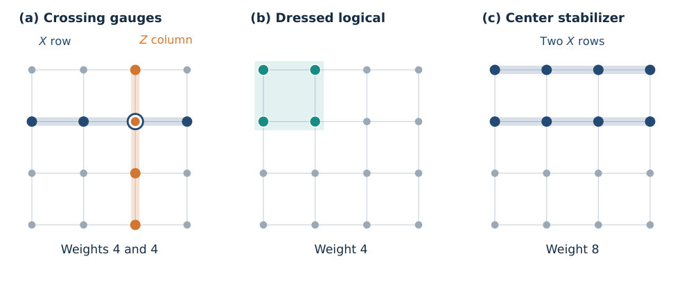
<figcaption class="paper-figure-caption"><b>Fig 1.</b> Figure 1: Three supports in the 4 × 4 code. (a) A row and a column meet once, so the indicated opposite-Pauli gauge operators anticommute. Each has weight four. (b) The four highlighted sites support a minimum logical operator. (c) Two parallel rows support a weight-eight stabilizer. The colors specify supports; panels (b) and (c) can be used in either pure Pauli sector.</figcaption>
</figure>
<figure class="paper-figure-card">
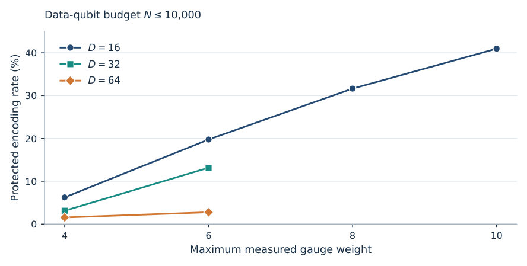
<figcaption class="paper-figure-caption"><b>Fig 2.</b> Figure 2: Exact rate–weight frontiers at fixed distance under 10,000 data qubits. The points are the discrete choices in Table 1; line segments guide the eye and do not represent intermediate codes. Increasing the number of axes raises distance and reduces the maximum achievable rate under this budget.</figcaption>
</figure>
</div>

<p><strong>Summary.</strong> This paper develops a rigorous theory for a specific family of quantum error-correcting codes defined on rectangular grids. It mathematically proves the exact distance of these codes and, crucially, maps out the achievable trade-off between the encoding rate and the required measurement weight. This provides concrete, constructive blueprints for building resource-efficient quantum memory.</p>
<p><strong>Why it may be interesting.</strong> This work provides concrete, mathematically verifiable constructions for QEC codes, which is foundational for building fault-tolerant quantum computation architectures, linking abstract algebraic structures to physical resource constraints.</p>
<details>
<summary>Detailed structure</summary>
<p><strong>Main problem.</strong> To find a useful finite construction for quantum error correction that explicitly relates the protected capacity (encoding rate), the minimum support of an undetectable logical Pauli error (distance), and the weight of the measured operators (measurement weight).</p>
<p><strong>Main result.</strong> The authors derive explicit formulas for a family of subsystem codes on rectangular grids, proving the dressed distance is exactly $2L$ (twice the number of dimensions) and establishing a concrete, constructive tradeoff between encoding rate and measurement weight.</p>
<p><strong>Method.</strong> The analysis uses algebraic techniques involving quotient spaces over F2, formal verification via Lean code snippets, and finite-rate optimization to map out the rate-weight frontier.</p>
<p><strong>Model / system.</strong> The study focuses on a family of quantum subsystem codes defined on rectangular coordinate grids of any dimension, with even side lengths of at least four. These codes are of the Calderbank–Shor–Steane (CSS) type.</p>
<p><strong>Key observables.</strong> Encoding Rate ($K/N$), Dressed Distance ($D$), Measurement Weight ($w$), and the number of protected logical qubits ($K$).</p>
<p><strong>Important parameters / regimes.</strong> The side lengths $q_1, \dots, q_L$ (must be even and $\ge 4$), the total data qubits $N$, and the budget constraint (e.g., $N \le 10,000$).</p>
<p><strong>Assumptions / limitations.</strong> The derived parameters are for a specific family of codes, and the analysis relies on formal proofs regarding the full-center equality and the structure of the gauge group.</p>
<p><strong>Figures summary.</strong> Figures illustrate the supports of gauge operators and logical operators in small examples (e.g., $4 	imes 4$ code), and the main results are summarized in tables showing the rate-weight frontiers for fixed distances (D=16, 32, 64).</p>
<p><strong>Paper structure.</strong> The paper proceeds by defining the code structure on rectangular grids, deriving the exact distance using quotient space arguments, and finally performing a finite, explicit enumeration to map the optimal rate-weight trade-off for fixed distances.</p>
</details>
<details>
<summary>Abstract</summary>
<p>We study a family of quantum subsystem codes defined on rectangular coordinate grids of any dimension, with even side lengths of at least four. The directly measured operators act along coordinate lines. For every member of the family, we derive the number of protected logical qubits and prove its dressed distance without a numerical search. To illustrate the resulting design choices, we impose a budget of at most 10,000 data qubits and determine the complete tradeoff between encoding rate and measurement weight within this family at distances 16, 32, and 64. At distance 16, one code protects 4,096 logical qubits among 10,000 data qubits using weight-ten measurements. At distances 32 and 64, codes with 7,776 and 9,216 data qubits protect 1,024 and 256 logical qubits, respectively, using weight-six measurements. We include and explain Lean code snippets throughout the paper to guide readers through the formal verification of our subsystem-code construction and its dressed and bare distances.</p>
</details>
<p><sub><a href="#top">↑ back to top</a></sub></p>

<p><a id="paper-2610.03661"></a></p>
<h3 id="lie-algebraic-uncertainty-relations"><a href="http://arxiv.org/abs/2610.03661v1">Lie Algebraic Uncertainty Relations</a></h3>
<p><strong>Authors:</strong> Xiaoli Hu, Naihuan Jing, Jian Zhang, Yunlong Xiao<br>
<strong>Type:</strong> theory · <strong>Category:</strong> other · <strong>PDF:</strong> <a href="https://arxiv.org/pdf/2610.03661v1">https://arxiv.org/pdf/2610.03661v1</a><br>
<strong>Analysis basis:</strong> full PDF text, analyzed in chunks
<strong>Topic relevance:</strong> <code>quantum measurements</code> <strong>2/5</strong></p>
<div class="figure-strip-hint">↔ Scroll figures horizontally</div>
<div class="paper-figures-scroll">
<figure class="paper-figure-card">
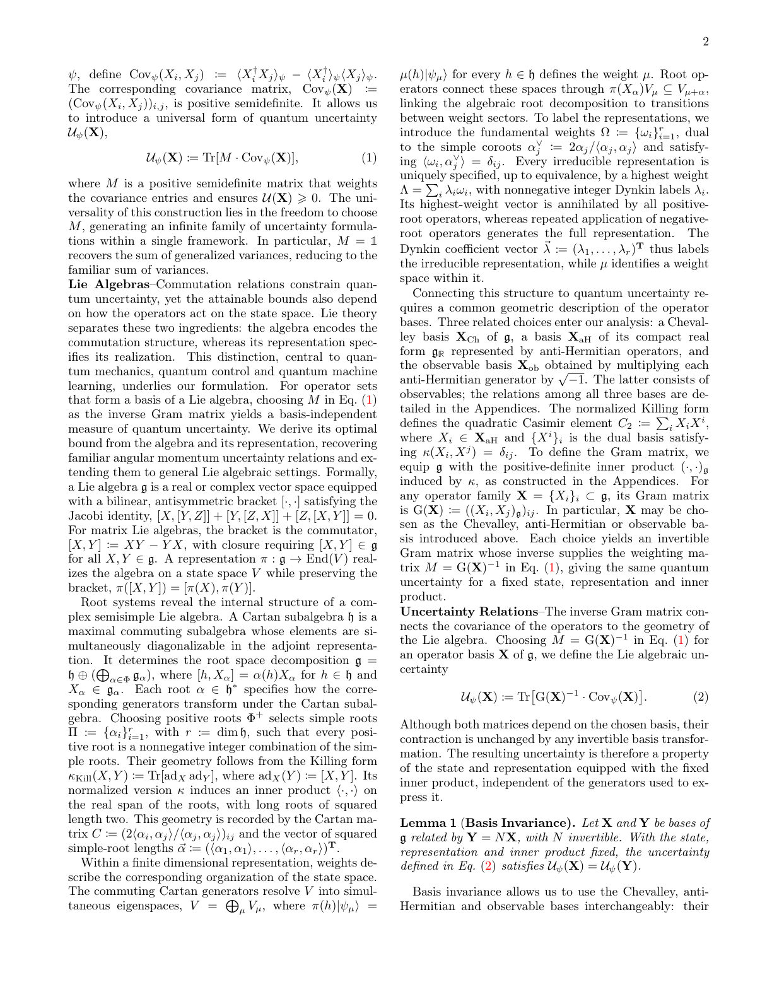
<figcaption class="paper-figure-caption"><b>Fig 1.</b> Low-resolution page preview, page 2</figcaption>
</figure>
<figure class="paper-figure-card">
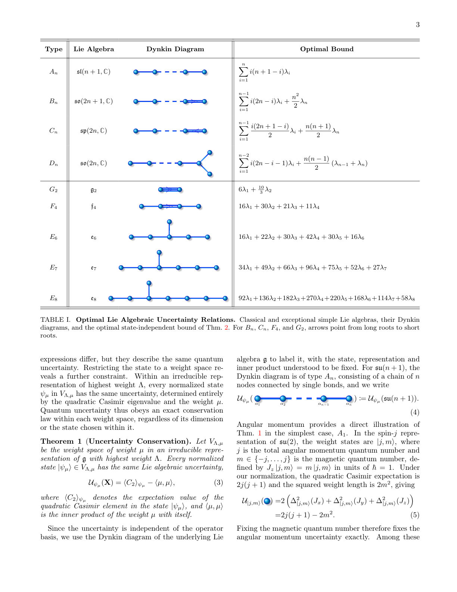
<figcaption class="paper-figure-caption"><b>Fig 2.</b> Low-resolution page preview, page 3</figcaption>
</figure>
<figure class="paper-figure-card">
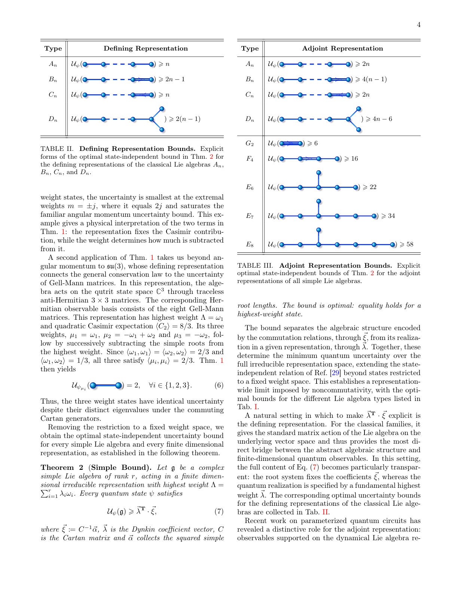
<figcaption class="paper-figure-caption"><b>Fig 3.</b> Low-resolution page preview, page 4</figcaption>
</figure>
<figure class="paper-figure-card">
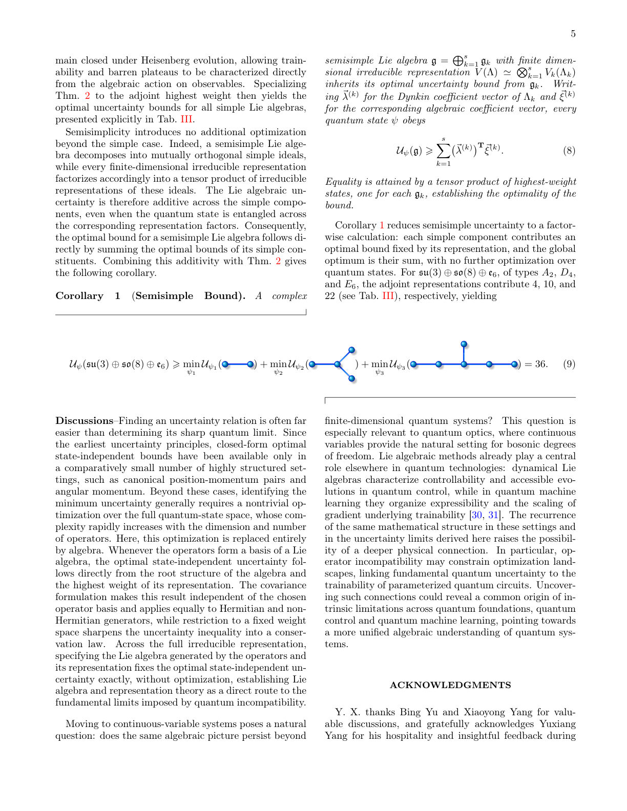
<figcaption class="paper-figure-caption"><b>Fig 4.</b> Low-resolution page preview, page 5</figcaption>
</figure>
<figure class="paper-figure-card">
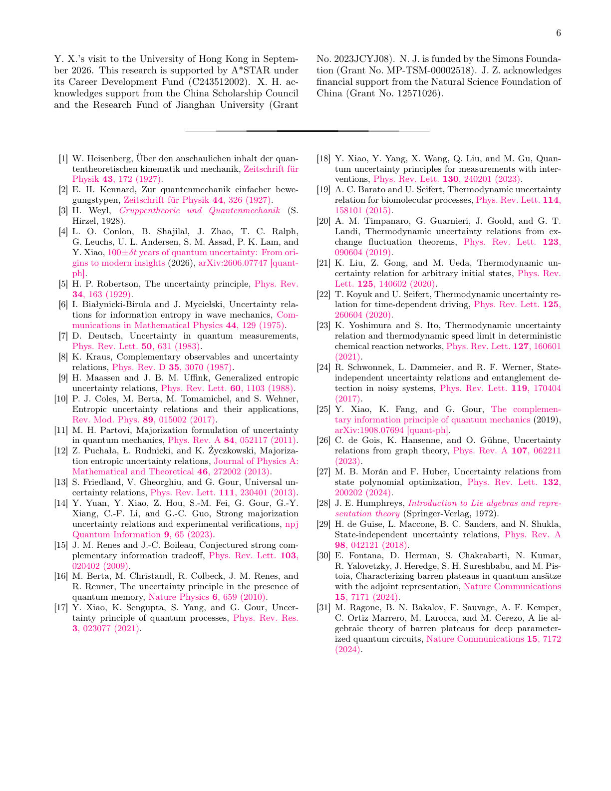
<figcaption class="paper-figure-caption"><b>Fig 5.</b> Low-resolution page preview, page 6</figcaption>
</figure>
</div>

<p><strong>Summary.</strong> This work develops a novel, algebraic method to determine the minimum quantum uncertainty for sets of incompatible observables that generate a Lie algebra. By reformulating uncertainty using covariance matrices and the Lie algebra structure, the authors derive optimal bounds independent of the specific quantum state. This connects fundamental quantum limitations directly to representation theory, offering insights into quantum information processing limits.</p>
<p><strong>Why it may be interesting.</strong> By connecting fundamental quantum uncertainty to the deep mathematical structure of Lie algebras, it provides a powerful, general framework for understanding intrinsic limits on quantum information processing.</p>
<details>
<summary>Detailed structure</summary>
<p><strong>Main problem.</strong> The paper aims to find optimal, state-independent bounds for quantum uncertainty relations, particularly for observables whose generators form a Lie algebra.</p>
<p><strong>Main result.</strong> The optimal uncertainty bound is determined entirely by the algebraic structure of the Lie algebra and the representation it acts upon, replacing state optimization with direct algebraic calculation.</p>
<p><strong>Method.</strong> It introduces a covariance-based formulation of uncertainty and leverages the structure theory of Lie algebras (e.g., Gram matrices, root systems) to derive these bounds.</p>
<p><strong>Model / system.</strong> The analysis is performed on quantum observables whose commutation relations define a Lie algebra ($\mathfrak{g}$), applicable to both Hermitian and non-Hermitian operators.</p>
<p><strong>Key observables.</strong> Lie algebraic uncertainty ($U_\psi(X)$), Casimir eigenvalues ($\langle C_2 
angle$), and weight space values.</p>
<p><strong>Important parameters / regimes.</strong> The structure constants of the Lie algebra, the representation labels ($\vec{\lambda}$), and the Killing form inner product.</p>
<p><strong>Assumptions / limitations.</strong> The operators under consideration must form a basis of a Lie algebra, and the analysis relies heavily on the structure theory of semisimple Lie algebras.</p>
<p><strong>Figures summary.</strong> The paper provides tables listing the optimal Lie algebraic uncertainty relations for various classical and exceptional simple Lie algebras in different representations.</p>
<p><strong>Paper structure.</strong> The paper progresses from introducing the covariance-based uncertainty measure to deriving the optimal bound using the inverse Gram matrix. It then proves basis invariance and establishes the constant uncertainty within weight spaces, culminating in general theorems for the full irreducible representation and semisimple algebras.</p>
</details>
<details>
<summary>Abstract</summary>
<p>Uncertainty relations express the fundamental incompatibility of quantum observables, yet optimal state-independent bounds are known analytically in only a few cases. Here we introduce a covariance-based formulation of quantum uncertainty that yields an infinite family of relations for both Hermitian observables and non-Hermitian operators. For operators forming a basis of a Lie algebra, we derive the optimal bound in closed form from the algebra and its representation, replacing optimization over quantum states with a direct algebraic calculation. Within each weight space, uncertainty takes a fixed value, turning the inequality into a conservation law. These results show how commutation relations and their realization on a quantum state jointly determine the minimum quantum uncertainty associated with incompatible operators. By connecting uncertainty to symmetry and representation theory, the framework offers a route to uncovering intrinsic limits on quantum information processing through its underlying Lie algebra.</p>
</details>
<p><sub><a href="#top">↑ back to top</a></sub></p>

<p><a id="paper-2610.02849"></a></p>
<h3 id="nonlocal-nonlinear-electrostatics-like-charge-attraction-and-asymmetric-solvation"><a href="http://arxiv.org/abs/2610.02849v1">Nonlocal, nonlinear electrostatics: like-charge attraction and asymmetric solvation</a></h3>
<p><strong>Authors:</strong> V. Stepanyan, Y. Sh. Mamasakhlisov, A. E. Allahverdyan<br>
<strong>Type:</strong> theory · <strong>Category:</strong> statistical mechanics · <strong>PDF:</strong> <a href="https://arxiv.org/pdf/2610.02849v1">https://arxiv.org/pdf/2610.02849v1</a><br>
<strong>Analysis basis:</strong> full PDF text, analyzed in chunks
<strong>Topic relevance:</strong> <code>Keldysh / 2PI / non-Gaussian methods</code> <strong>2/5</strong></p>
<div class="figure-strip-hint">↔ Scroll figures horizontally</div>
<div class="paper-figures-scroll">
<figure class="paper-figure-card">
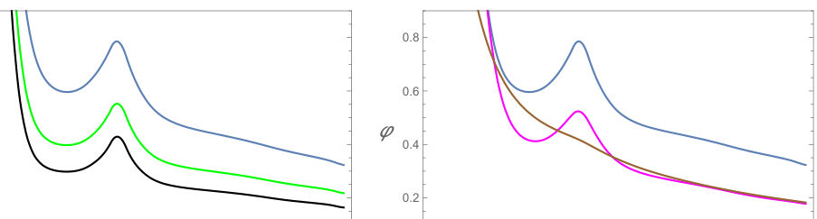
<figcaption class="paper-figure-caption"><b>Fig 1.</b> FIG. 1: (a) Iterative solutions φ(r) of (22) for dimers with rmax = 5 [cf. (31)], b = 9, c = 50 and various values of d: d = 5 (blue), d = 7.5 (green), d = 11 (black). There is a partially visible maximum of φ(r) at ≃1/b. (b) The same as in Fig. 1(a), but for c = 50, d = 5, and various values of b: b = 9 (blue), b = 5 (magenta), b = 1 (brown).</figcaption>
</figure>
<figure class="paper-figure-card">
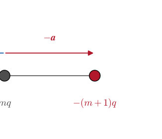
<figcaption class="paper-figure-caption"><b>Fig 2.</b> FIG. 2: Schematic representation of a linear molecule with charges q, mq, and −(m + 1)q; see (34).</figcaption>
</figure>
<figure class="paper-figure-card">
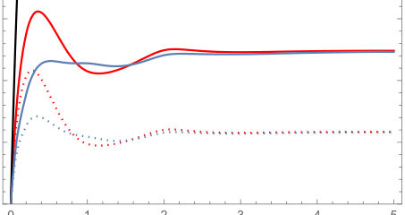
<figcaption class="paper-figure-caption"><b>Fig 3.</b> FIG. 3: For the linear molecule (34) with m = −1/2, we plot the solution χ = χ+ of dimensionless (35, 29) under c = 5, d = 1 and b = 5 and rmax = 5. This is the red curve, where rmax is defined in (31). We also plot the solution −χ = −χ−of (35, 29) under c = −5, d = 1 and b = 5 and rmax = 5 (blue curve); c = 5, d = 2.5 and b = 5 (red dotted); c = −5, d = 2.5 and b = 5 (blue dotted). The black curve denotes χext(r) = c(1 −e−br) for c = 5 and b = 5; cf. (29). Note that for small r the black curve nearly coincides with red and blue curves, which indicates that (naturally) the screening is absent at small distances.</figcaption>
</figure>
<figure class="paper-figure-card">
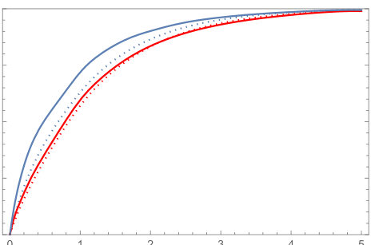
<figcaption class="paper-figure-caption"><b>Fig 4.</b> FIG. 4: For the linear molecule (34) with m = 1, we plot the solution χ = χ+ of dimensionless (35, 29) under c = 4, d = 1 and b = 4 and rmax = 5. This is the red curve, where rmax is defined in (31). We also plot the solution −χ = −χ−of (35, 29) under c = −4, d = 1 and b = 4 and rmax = 5 (blue curve). Dotted curves denote χ+ and −χ−for c = ±4, d = 1 and b = 2 and rmax = 5; i.e., for a smaller value of b, where χ+ −|χ−| is smaller.</figcaption>
</figure>
<figure class="paper-figure-card">

<figcaption class="paper-figure-caption"><b>Fig 5.</b> Fig. 3 studied a linear molecular structure (q, −0.5q, −0.5q) [cf. (34)], which is similar to a dimer with one of its ends having a lower charge density. A linear structure with zero dipole momentum that is possibly far from the dimer refers to m = 1 in (34); i.e., it refers to the linear molecule (q, −2q, q) (q &gt; 0). Notable examples of such molecules are carbon dioxide O−0.3|qe| = C0.6|qe| = O−0.3|qe|, and carbon disulfide S−0.18|qe| = C0.36|qe| = S−0.18|qe|. Consider now the situation where the external field is given by (29). We pose the same question as above: which external charge Q &gt; 0 (c &gt; 0) or Q &lt; 0 (c &lt; 0) is screened better. The intuition drawn from the previous example (see...</figcaption>
</figure>
</div>

<p><strong>Summary.</strong> This paper develops a theory for nonlinear electrostatics to explain anomalous interactions in molecular systems. It shows that nonlocal effects can cause like-charge attraction and break the expected symmetry of solvation based on charge sign. The work uses mean-field theory to analyze these complex, non-local interactions.</p>
<p><strong>Why it may be interesting.</strong> The focus on nonlinear, nonlocal electrostatics and symmetry breaking in solvation provides a rich theoretical framework applicable to complex molecular interactions, relevant for understanding environmental effects on quantum systems.</p>
<details>
<summary>Detailed structure</summary>
<p><strong>Main problem.</strong> The study investigates nonlinear electrostatics to understand phenomena like like-charge attraction and solvation structure asymmetry, which are missed by standard local theories.</p>
<p><strong>Main result.</strong> The research demonstrates that like charges can attract due to nonlocal polarization effects, and that the solvation structure can violate effective C-symmetry depending on the external charge sign.</p>
<p><strong>Method.</strong> The authors employ a mean-field approach, solving self-consistent equations derived from the Coulomb coupling, and comparing results with nonlinear Poisson-Boltzmann frameworks.</p>
<p><strong>Model / system.</strong> The system models an equilibrium ensemble of linear molecules with rigid charge distributions interacting via a mean-field Coulomb potential. The analysis extends to comparing results with asymmetric electrolytes.</p>
<p><strong>Key observables.</strong> Mean-field potential $\phi(x)$, free energy ($F$), entropy differences, and the average dipole moment ($ar{P}$).</p>
<p><strong>Important parameters / regimes.</strong> The nonlocality scale ($\ell \sim \ell_{	ext{mol}}$), the dielectric permittivity ($\epsilon$), and the charge sign.</p>
<p><strong>Assumptions / limitations.</strong> The theory relies on the mean-field approximation, which is an upper bound, and assumes the rigid-charge distribution model (neglecting induced dipoles).</p>
<p><strong>Paper structure.</strong> The paper details the mean-field approach, discusses the violation of effective C-symmetry, and compares the findings with established nonlinear Poisson-Boltzmann equations.</p>
</details>
<details>
<summary>Abstract</summary>
<p>We study an equilibrium system, where linear molecules with a rigid charge distribution interact via the mean-field generated by the Coulomb coupling. We focus on the nonlinear regime, which is valid close to external charges immersed in the system. The finite molecular size in this regime leads to a nonlocal response at short distances. First, we show that the mean-field potential is non-monotonic, i.e., like charges can attract each other. Second, we show that the polarization induced by an external charge (and hence its solvation structure) depends on the sign of this charge, violating the effective C-symmetry of the macroscopic electrodynamics. We identify several scenarios of this effect, characterize it with the free energy and entropy differences, and compare it with analogous effects in asymmetric electrolytes described by nonlinear Poisson-Boltzmann equations.</p>
</details>
<p><sub><a href="#top">↑ back to top</a></sub></p>

<p><a id="paper-2610.03697"></a></p>
<h3 id="on-the-complexity-of-redundancy-free-quantum-hamiltonians"><a href="http://arxiv.org/abs/2610.03697v1">On The Complexity of Redundancy-Free Quantum Hamiltonians</a></h3>
<p><strong>Authors:</strong> Matthew B. Hastings, Alexander Schmidhuber<br>
<strong>Type:</strong> theory · <strong>Category:</strong> quantum information and computing · <strong>PDF:</strong> <a href="https://arxiv.org/pdf/2610.03697v1">https://arxiv.org/pdf/2610.03697v1</a><br>
<strong>Analysis basis:</strong> full PDF text, analyzed in chunks
<strong>Topic relevance:</strong> <code>analog quantum simulation</code> <strong>2/5</strong></p>
<div class="figure-strip-hint">↔ Scroll figures horizontally</div>
<div class="paper-figures-scroll">
<figure class="paper-figure-card">
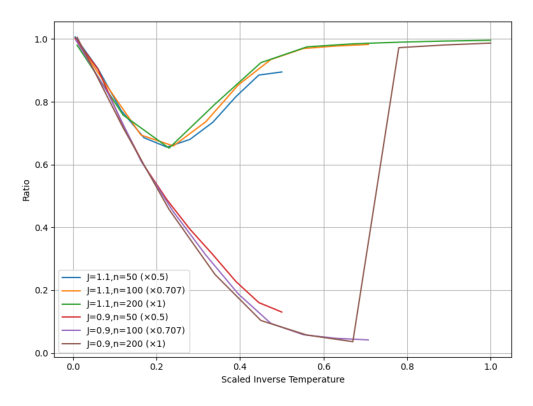
<figcaption class="paper-figure-caption"><b>Fig 1.</b> FIG. 1: Plot of ratio against inverse temperature for J = 0.9, 1.1, and n = 50, 100, 200. Inverse temperature is multiplied by a scale factor, given in parenthesis in the legend. The scale factor is proportional to 1/√n.</figcaption>
</figure>
<figure class="paper-figure-card">
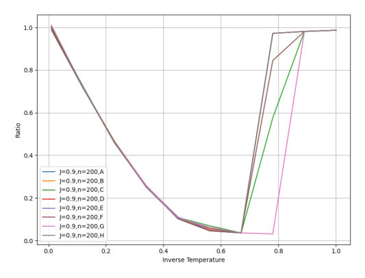
<figcaption class="paper-figure-caption"><b>Fig 2.</b> FIG. 2: Plot of ratio against inverse temperature for J = 0.9, n = 200. Multiple Monte Carlo runs with the same random realization.</figcaption>
</figure>
<figure class="paper-figure-card">
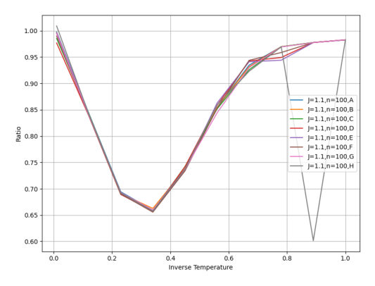
<figcaption class="paper-figure-caption"><b>Fig 3.</b> FIG. 3: Plot of ratio against inverse temperature for J = 1.1, n = 100. Multiple Monte Carlo runs with the same random realization.</figcaption>
</figure>
</div>

<p><strong>Summary.</strong> This work analyzes the computational difficulty associated with preparing quantum states governed by 'redundancy-free Hamiltonians.' It establishes that while the problem is tractable for low inverse temperatures ($eta$), it becomes NP-hard for large $eta$. The research provides theoretical tools to understand the complexity boundaries in quantum simulation and quantum information processing.</p>
<p><strong>Why it may be interesting.</strong> It provides a rigorous framework for understanding the computational limits of quantum simulation protocols (like HDQI) by linking Hamiltonian structure directly to complexity classes (NP-hard, QMA-complete).</p>
<details>
<summary>Detailed structure</summary>
<p><strong>Main problem.</strong> The paper characterizes the computational hardness of preparing quantum states, specifically the thermofield double state, associated with a specialized class of Hamiltonians called 'redundancy-free Hamiltonians.'</p>
<p><strong>Main result.</strong> The complexity of state preparation is shown to be easy at quadratically lower temperatures than for general Hamiltonians, while estimating the ground state energy is proven to be QMA-complete.</p>
<p><strong>Method.</strong> The analysis employs techniques from statistical mechanics (polymer expansion) and quantum complexity theory, establishing bounds and hardness results based on the structure of the Hamiltonian's anticommutation graph.</p>
<p><strong>Model / system.</strong> The focus is on 'redundancy-free Hamiltonians,' which are sums of products of Paulis. The complexity is analyzed using the structure defined by the Hamiltonian's anticommutation graph, leading to the concept of an 'anticommutation glass.'</p>
<p><strong>Key observables.</strong> The partition function $   ext{Tr}(e^{-eta H})$ and the fidelity of state preparation are key observables.</p>
<p><strong>Important parameters / regimes.</strong> The complexity is governed by the parameter $\kappa = eta^2 d$, where $d$ is the degree of the anticommutation graph, defining regimes of 'easy' vs. 'hard' computation.</p>
<p><strong>Assumptions / limitations.</strong> The analysis often simplifies by focusing on the Pauli case and relies on convergence conditions for the polymer expansion to hold for small $\kappa$.</p>
<p><strong>Paper structure.</strong> The paper progresses by defining the redundancy-free Hamiltonians, analyzing the partition function via polymer expansions, establishing the complexity regimes ($\kappa$), and concluding with hardness results for state preparation and ground state energy estimation.</p>
</details>
<details>
<summary>Abstract</summary>
<p>We consider a class of redudancy-free Hamiltonians, which are those where the trace vanishes for any product of Hamiltonian terms in which at least one term appears an odd number of times. This includes Hamiltonians which are sums of products of Paulis with no relations between them. These Hamiltonians arise naturally in Hamiltonian Decoded Quantum Interferometry, which separates the hardness of preparing quantum states into two steps: a classical decoding step, and a step preparing the thermofield double state of such a redundancy-free Hamiltonian.   We focus on the hardness of these Hamiltonians, both for intrinsic interest and to understand the complexity of the state preparation step in Hamiltonian DQI. We present several results showing that the problem becomes easy at quadratically lower temperature than for a general Hamiltonian, with the complexity at given inverse temperature $β$ depending on $β^2 d$, where $d$ is the degree of the anticommutation graph. We give an efficient classical algorithm for small $β^2 d$ to approximate the partition function, while for large $β^2 d$ we show that approximating the partition function is NP-hard. To this end, we introduce what we call an anticommutation glass, where frustration arises purely from anticommutation relations. We give a subexponential time quantum algorithm to prepare the thermofield state for small $β^2 d$, and present some results toward a polynomial time algorithm based on the Feiguin-Klich Hamiltonian. As a result of possible independent interest, we show that this Hamiltonian leads to a polynomial time algorithm for preparing thermofield double states of general Hamiltonians on an interaction graph of degree $d$ for $β\lesssim 1/d$. Finally, we show that estimating the ground state energy of redundancy-free Hamiltonians is QMA-complete.</p>
</details>
<p><sub><a href="#top">↑ back to top</a></sub></p>

<p><a id="paper-2610.02409"></a></p>
<h3 id="projective-symmetry-group-classification-of-fermionic-math630math-spin-liquids-on-the-dipolar-octupolar-pyrochlore-magnets"><a href="http://arxiv.org/abs/2610.02409v1">Projective symmetry group classification of fermionic $Z_2$ spin liquids on the dipolar-octupolar pyrochlore magnets</a></h3>
<p><strong>Authors:</strong> Rohit Deb, Sambuddha Sanyal<br>
<strong>Type:</strong> theory · <strong>Category:</strong> strongly correlated electrons · <strong>PDF:</strong> <a href="https://arxiv.org/pdf/2610.02409v1">https://arxiv.org/pdf/2610.02409v1</a><br>
<strong>Analysis basis:</strong> full PDF text, analyzed in chunks
<strong>Topic relevance:</strong> <code>analog quantum simulation</code> <strong>2/5</strong></p>
<div class="figure-strip-hint">↔ Scroll figures horizontally</div>
<div class="paper-figures-scroll">
<figure class="paper-figure-card">
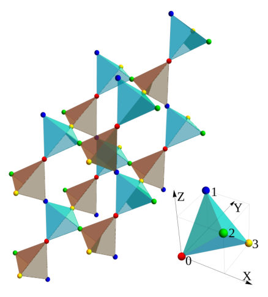
<figcaption class="paper-figure-caption"><b>Fig 1.</b> FIG. 1: (Top) The pyrochlore lattice. (Inset) The unit cell consists of four sites labeled 0, 1, 2, and 3. The X, Y, and Z represent the global cartesian directions.</figcaption>
</figure>
<figure class="paper-figure-card">
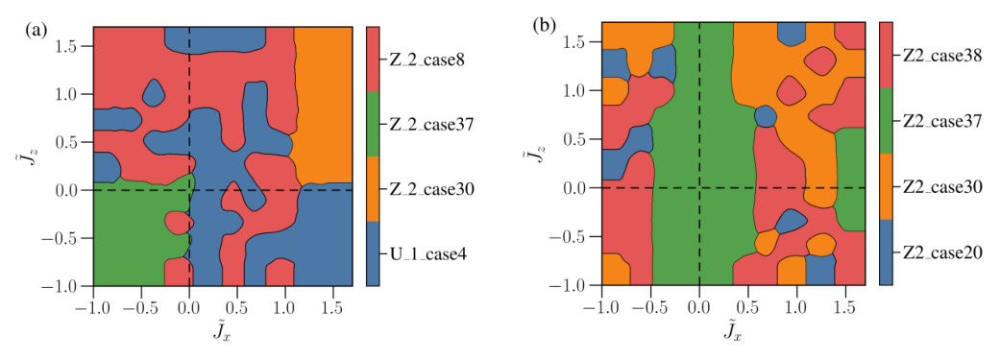
<figcaption class="paper-figure-caption"><b>Fig 2.</b> FIG. 2: (a)Mean-field phase diagram in the anisotropic-exchange parameter space, restricted to the singlet and triplet hopping channels, with ˜Jy = 1. At each point ( ˜Jx, ˜Jy, ˜Jz), the ground-state energies of all 32 mean-field ansatze are compared, and the color denotes the ansatz with the lowest energy. (b) Mean-field phase diagram obtained by including all allowed mean-field channels, again fixing ˜Jy = 1. The ground-state energies of all 48 ansatze are compared at each point in parameter space, with the color indicating the lowest-energy ansatz. The black dashed line denotes the region excluded from the phase diagram, where the exchange couplings cancel the relative weights of the...</figcaption>
</figure>
<figure class="paper-figure-card">
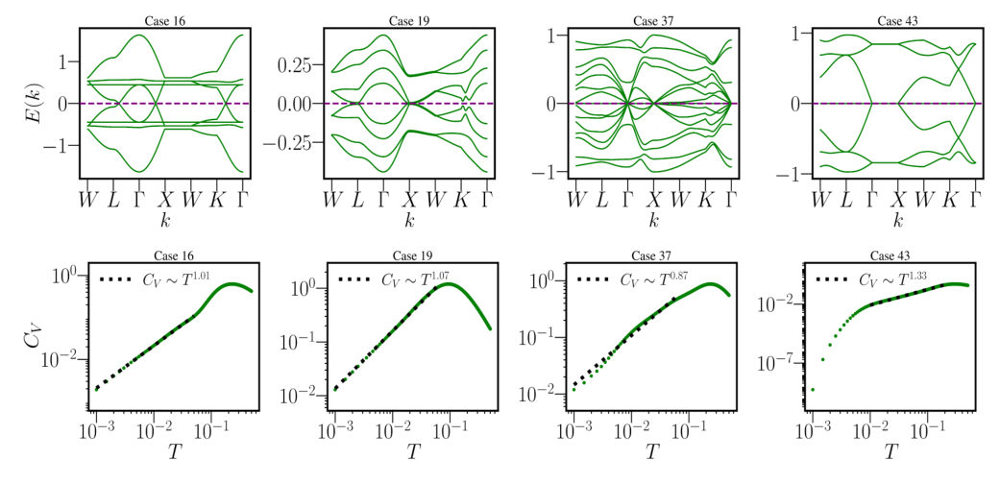
<figcaption class="paper-figure-caption"><b>Fig 3.</b> FIG. 3: Spinon band structures (top) and temperature dependence of the specific heat, CV (bottom), for different PSG cases 16, 19, 37, and 43 in the isotropic Hamiltonian( ˜Jx = ˜Jy = ˜Jz = ˜J). The purple dashed line in the band-structure plots denotes the Fermi energy at half-filling. The black dashed lines in the specific heat plots show the corresponding linear fits used to determine the power-law exponent.</figcaption>
</figure>
<figure class="paper-figure-card">
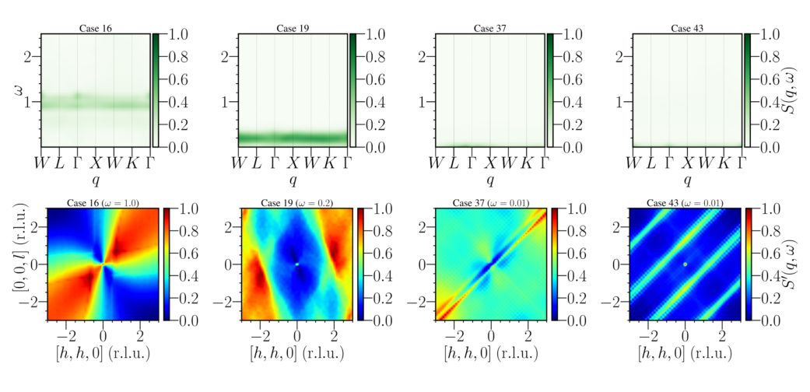
<figcaption class="paper-figure-caption"><b>Fig 4.</b> FIG. 4: Dynamical (top) and static (bottom) structure factors, shown in color scale, along high-symmetry momentum paths and within the high-symmetry [h, h, l] plane for PSG cases 16, 19, 37, and 43 in the isotropic Hamiltonian ( ˜Jx = ˜Jy = ˜Jz = ˜J).</figcaption>
</figure>
<figure class="paper-figure-card">
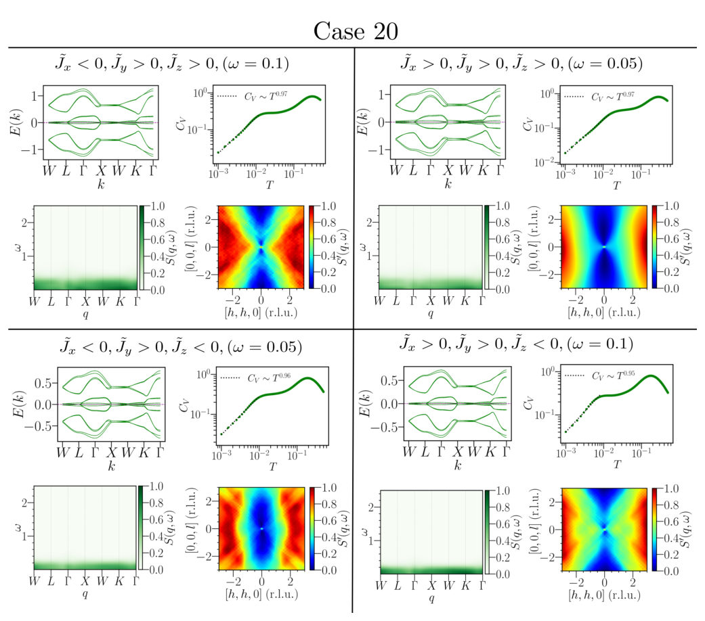
<figcaption class="paper-figure-caption"><b>Fig 5.</b> FIG. 5: PSG case 20. A flat band at the Fermi energy coexists with other dispersive bands across all four exchange coupling regimes. The low energy CV (T) is nearly linear (γ ∼0.95 −0.97) and shows a plateau before its maximum. The S(q, ω) weight is confined to ω ≤0.3 ˜J. The S′(q, ω) cut shows a prominent low-intensity channel along [0, 0, l] independent of the exchange coupling regime and a bow-tie-like feature at ω = 0.1 in regimes II and IV.</figcaption>
</figure>
</div>

<p><strong>Summary.</strong> This work classifies $Z_2$ quantum spin liquids on pyrochlore magnets by treating the magnetic moments as fermionic partons. By incorporating the specific dipolar-octupolar symmetry, the authors find that the resulting gapless spinon spectra correctly account for the fractionalized thermodynamics observed in real materials. This provides a detailed, symmetry-enforced theoretical framework for understanding frustrated magnetism.</p>
<p><strong>Why it may be interesting.</strong> The rigorous application of symmetry constraints (PSG) to classify exotic quantum ground states, and the explicit derivation of fermionic excitations, provides a powerful theoretical tool for understanding strongly correlated magnetic materials.</p>
<details>
<summary>Detailed structure</summary>
<p><strong>Main problem.</strong> To systematically construct and classify all symmetry-preserving $Z_2$ quantum spin liquid (QSL) states on the dipolar-octupolar (DO) pyrochlore lattice.</p>
<p><strong>Main result.</strong> The distinct DO symmetry action selects a physically different set of symmetry-allowed mean-field channels, leading to a fermionic-parton account for gapless, fractionalized thermodynamics observed in materials like Nd2ScNbO7.</p>
<p><strong>Method.</strong> The classification uses the Projective Symmetry Group (PSG) formalism applied to fermionic parton representations, followed by self-consistent mean-field energy minimization.</p>
<p><strong>Model / system.</strong> The system is the pyrochlore lattice, modeled by an effective pseudospin-1/2 DO Hamiltonian that reduces to an anisotropic XYZ model. The analysis maps the spin-spin interaction into quadratic fermionic mean-field terms.</p>
<p><strong>Key observables.</strong> Spinon band structures, low-temperature specific heat (power-law exponent), and the dynamical spin structure factor.</p>
<p><strong>Important parameters / regimes.</strong> The anisotropic exchange couplings ($   ilde{J}_x,  ilde{J}_z$) defining the phase diagram, and the chemical potential ($\chi_1$) governing unit cell periodicity.</p>
<p><strong>Assumptions / limitations.</strong> The analysis relies on mean-field approximations, and the distinct DO symmetry action is crucial, differentiating the results from simpler spin-1/2 or bosonic models.</p>
<p><strong>Figures summary.</strong> Figures illustrate the pyrochlore lattice structure, sublattices, and the extended unit cell used for mean-field calculations.</p>
<p><strong>Paper structure.</strong> The paper systematically covers the Hamiltonian definition, the PSG/symmetry classification framework, the derivation of the fermionic mean-field ansatz, and finally, the calculation of key observables and phase diagrams.</p>
</details>
<details>
<summary>Abstract</summary>
<p>We construct and classify $Z_2$ quantum spin liquids (QSLs) of fermionic partons on the dipolar-octupolar (DO) pyrochlore lattice. The DO pseudospin shares the space-group and time-reversal algebra of the effective spin-1/2 Kramers doublet, its projective symmetry group (PSG) yields the same 48 symmetric $Z_2$ classes as the generic fermionic classification. We show, the distinct DO symmetry action, encoded in a set of sublattice-independent operators, selects a physically different set of symmetry-allowed mean-field channels, so that the resulting ansatze, spinon spectra, and observables differ from both the effective spin-1/2 case and the bosonic DO classification. Decomposing the anisotropic XYZ exchange model into all symmetric singlet and triplet hopping and pairing channels and minimizing the mean-field energy self-consistently, we obtain phase diagrams in the ($\tilde{J_x}, \tilde{J_z}$) plane in which only a few $Z_2$ states, several supporting gapless or flat-band spinon spectra, are stabilized. For these states we compute the spinon band structures, the low-temperature specific heat, and the dynamical spin structure factor, and we argue that the power-law specific-heat exponent is a diagnostic of the spinon nodal structure. A near-linear-in-temperature specific heat together with broad continua in the structure factor gives a fermionic-parton account of the gapless, fractionalized thermodynamics reported in DO materials such as $Nd_2ScNbO_7$, complementing the bosonic quantum-spin-ice picture of the Ce-based compounds. The work extends the fermionic-parton classification of DO pyrochlore QSLs beyond the $U(1)$ sector, where $Z_2$ topological order is realized equally naturally by fermionic and bosonic spinons.</p>
</details>
<p><sub><a href="#top">↑ back to top</a></sub></p>

<p><a id="paper-2610.03706"></a></p>
<h3 id="quantum-estimation-channel-orders-and-private-capacity"><a href="http://arxiv.org/abs/2610.03706v1">Quantum estimation, channel orders, and private capacity</a></h3>
<p><strong>Authors:</strong> Christoph Hirche<br>
<strong>Type:</strong> theory · <strong>Category:</strong> quantum information and computing · <strong>PDF:</strong> <a href="https://arxiv.org/pdf/2610.03706v1">https://arxiv.org/pdf/2610.03706v1</a><br>
<strong>Analysis basis:</strong> full PDF text, analyzed in chunks
<strong>Topic relevance:</strong> <code>quantum measurements</code> <strong>2/5</strong></p>
<div class="figure-strip-hint">↔ Scroll figures horizontally</div>
<div class="paper-figures-scroll">
<figure class="paper-figure-card">
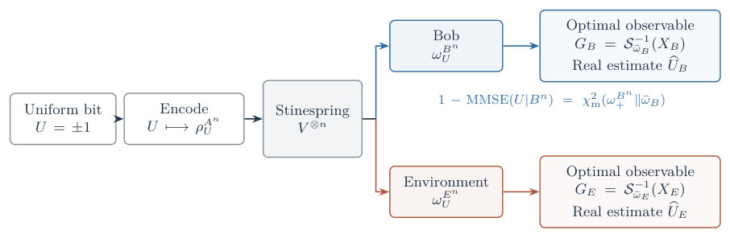
<figcaption class="paper-figure-caption"><b>Fig 1.</b> Figure 1. Binary estimation at the receiver and the environment of a single Stinespring dilation. Each output admits a real-valued score whose optimal mean-square error is given by measured χ2. The averages ¯ωB, ¯ωE and differences XB, XE are formed from the two output states; the SLD map and its quadratic form are defined in (2.4).</figcaption>
</figure>
<figure class="paper-figure-card">

<figcaption class="paper-figure-caption"><b>Fig 2.</b> Figure 2. Channel classes defined by comparing N c with N. Nesting denotes inclusion and does not assert strictness of every intermediate inclusion. Panel (a) displays reference-complete criteria. Panel (b) displays criteria imposed at every tensor power without an external reference; its inner region is regularized measured-χ2 domination, whereas regularized anti-less-noisiness coincides with the outer zero-private-capacity class. The cross-panel arrows are the tensorization implications in (3.12). The Pauli channel F and the coherent-ladder channels Ns, s ≥3, satisfy regularized measured domination but not complete anti-less-noisiness.</figcaption>
</figure>
<figure class="paper-figure-card">
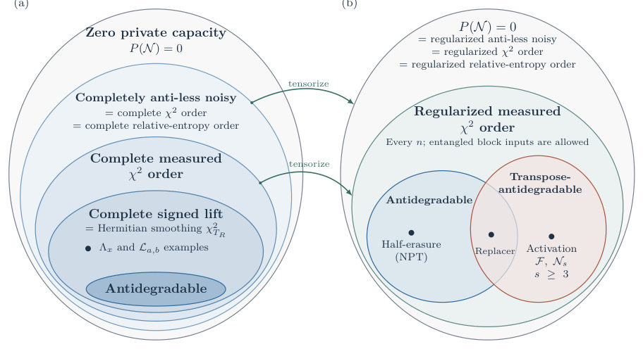
<figcaption class="paper-figure-caption"><b>Fig 3.</b> Figure 2 displays the resulting inclusions between complete and regularized channel classes.</figcaption>
</figure>
<figure class="paper-figure-card">
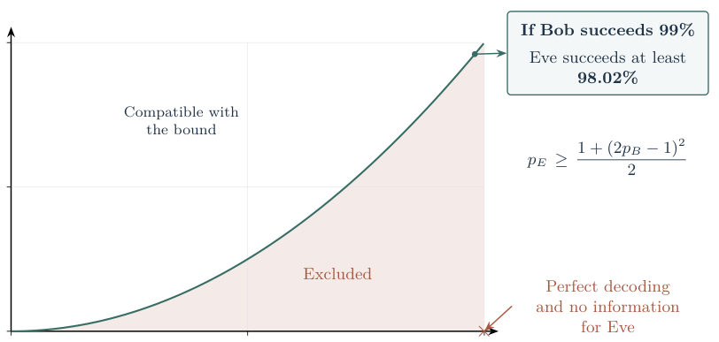
<figcaption class="paper-figure-caption"><b>Fig 4.</b> Figure 3. Reliable decoding forces information leakage under Theorem 4.1. The plot uses an equiprobable binary code: pB = 1 −η is Bob’s decoding success and pE = 1</figcaption>
</figure>
<figure class="paper-figure-card">
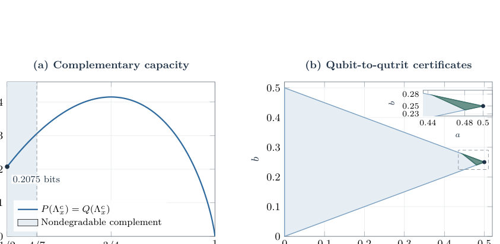
<figcaption class="paper-figure-caption"><b>Fig 5.</b> Figure 4. Explicit capacity and parameter conclusions. (a) The exact complementary capacity in (5.5); the shaded interval 1/2 ≤x &lt; 4/7 consists of nondegradable complements. The original channel has zero private capacity throughout the plotted interval. (b) Throughout the region (5.7), La,b has a complete signed lift and zero private and quantum capacity; it is NPT except at the origin. The darker corner also satisfies 3 √</figcaption>
</figure>
</div>

<p><strong>Summary.</strong> This paper develops a comprehensive framework to analyze the private capacity of quantum channels by connecting it to the measured $\chi^2$ divergence derived from binary estimation. It establishes a rigorous hierarchy of channel orderings and provides sharp, quantitative bounds for capacity and antidegradability, explaining when and why these information measures are equivalent or distinct.</p>
<p><strong>Why it may be interesting.</strong> This work provides deep structural insights into quantum channel capacity, linking concrete estimation tasks (like MMSE) to abstract concepts like antidegradability, which is crucial for understanding information leakage in quantum communication protocols.</p>
<details>
<summary>Detailed structure</summary>
<p><strong>Main problem.</strong> The paper aims to characterize the private capacity of quantum channels and establish structural conditions for when zero private capacity occurs, especially when this condition does not imply antidegradability.</p>
<p><strong>Main result.</strong> The authors establish a hierarchy connecting complete measured-$\chi^2$ ordering to quantum $\chi^2$ ordering, providing sharp thresholds for private capacity and antidegradability for various noisy channels.</p>
<p><strong>Method.</strong> The work heavily utilizes measured $\chi^2$ divergence derived from binary estimation tasks, connecting these measurements to fundamental quantum information measures like private capacity and relative entropy.</p>
<p><strong>Model / system.</strong> The analysis focuses on general quantum channels ($\Lambda$) acting on qubits and qutrits, involving an input, a receiver, and an environment. Specific models include Werner-Holevo channels and Pauli half-erasure channels.</p>
<p><strong>Key observables.</strong> Private Capacity $P(N)$, Minimum Mean-Square Error (MMSE), measured $\chi^2$ divergence ($\chi^2_m$), and various channel orderings ($\preceq$).</p>
<p><strong>Important parameters / regimes.</strong> Blocklength ($n$), the degree of the channel (e.g., qutrit extension), and the error parameters ($p$ in erasure channels).</p>
<p><strong>Assumptions / limitations.</strong> The analysis relies on connecting operational tasks (like binary estimation) to theoretical channel properties, and in some parts, assumes specific structural forms for the channels (e.g., for the simulator construction).</p>
<p><strong>Figures summary.</strong> Figure 1 illustrates the use of measured $\chi^2$ divergence in binary estimation at both the receiver and the environment.</p>
<p><strong>Paper structure.</strong> The paper progresses by first connecting private capacity to channel orders using measured $\chi^2$ (Chunk 1). It then develops the mathematical framework by relating $\chi^2_m$ to MMSE and establishing the hierarchy of orderings (Chunk 2). Finally, it applies these tools to analyze specific channel properties like antidegradability and capacity bounds using qutrit and general channel constructions (Chunks 3 &amp; 4).</p>
</details>
<details>
<summary>Abstract</summary>
<p>Recent examples have shown that zero private capacity need not imply antidegradability and that two channels with zero private capacity can nevertheless transmit private information together. Existing entropic channel orders compare what a receiver and its environment can learn and thereby bound capacities. We connect these orders to the recent constructions through binary estimation, whose minimum mean-square error is governed by measured $χ^2$ divergence. A new integral representation shows how measured $χ^2$ on a qubit extension recovers quantum $χ^2$. It lets us pass from complete measured-$χ^2$ ordering to complete quantum-$χ^2$, relative-entropy, and less-noisy ordering. Zhu and Wang used a signed lift to show that their qutrit channel has zero private capacity. We show that Hermitian-smoothed measured-$χ^2$ ordering characterizes when such lifts exist, even with a quantum reference. Environmental dominance in binary estimation at every blocklength yields a finite-code reliability--secrecy bound. These results explain why complete comparison prevents activation with antidegradable helpers whereas regularized comparison alone does not. Building on that qutrit example, we establish this stability for a range of noisy Werner--Holevo channels, determine sharp private-capacity and antidegradability thresholds, and compute exact complementary capacities in a nondegradable range. By contrast, we extend Pauli half-erasure activation to all $1/2\le p<1$ and establish the same range for a new four-level family. Reference-assisted measured-$χ^2$ witnesses show why these activating constructions lack complete comparison.</p>
</details>
<p><sub><a href="#top">↑ back to top</a></sub></p>

<p><a id="paper-2610.03593"></a></p>
<h3 id="quantum-fire-with-delegated-cloning"><a href="http://arxiv.org/abs/2610.03593v1">Quantum Fire with Delegated Cloning</a></h3>
<p><strong>Authors:</strong> Rohit Chatterjee, Ananta Mukherjee, Vir Pathak, Supartha Podder<br>
<strong>Type:</strong> theory · <strong>Category:</strong> quantum information and computing · <strong>PDF:</strong> <a href="https://arxiv.org/pdf/2610.03593v1">https://arxiv.org/pdf/2610.03593v1</a><br>
<strong>Analysis basis:</strong> full PDF text, analyzed in chunks
<strong>Topic relevance:</strong> <code>quantum measurements</code> <strong>2/5</strong></p>
<div class="figure-strip-hint">↔ Scroll figures horizontally</div>
<div class="paper-figures-scroll">
<figure class="paper-figure-card">
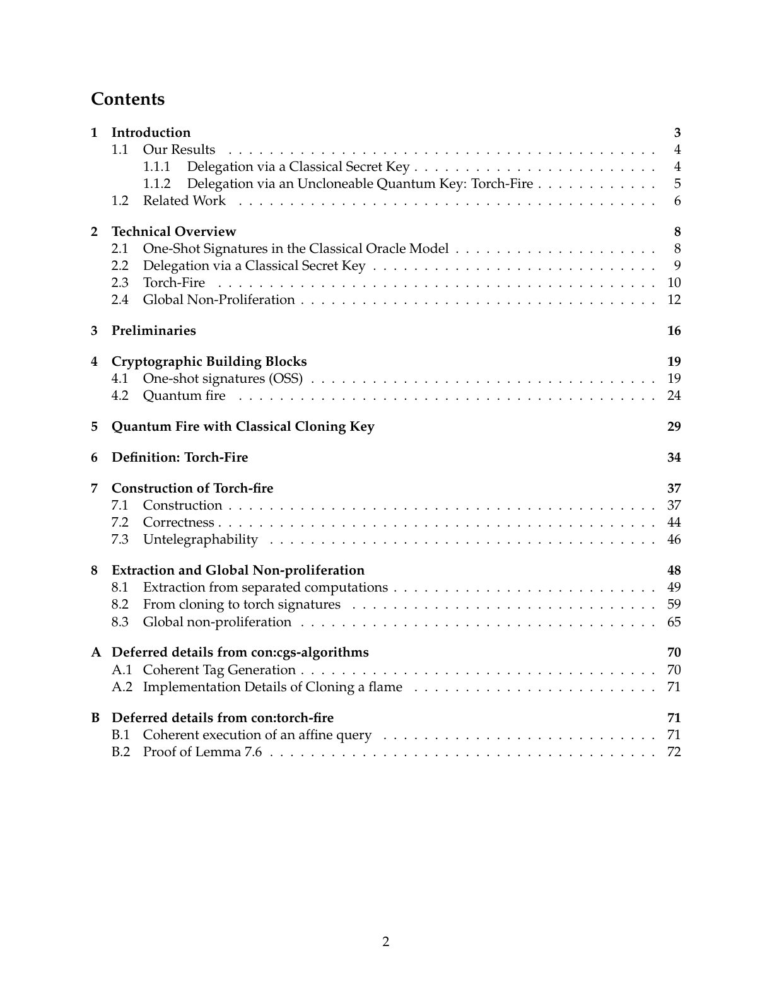
<figcaption class="paper-figure-caption"><b>Fig 1.</b> Low-resolution page preview, page 2</figcaption>
</figure>
<figure class="paper-figure-card">
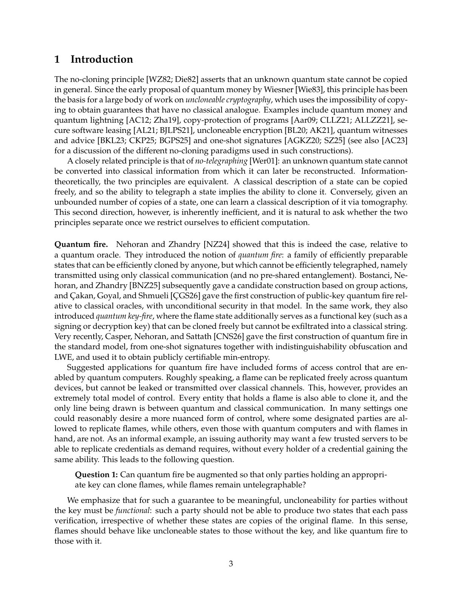
<figcaption class="paper-figure-caption"><b>Fig 2.</b> Low-resolution page preview, page 3</figcaption>
</figure>
<figure class="paper-figure-card">
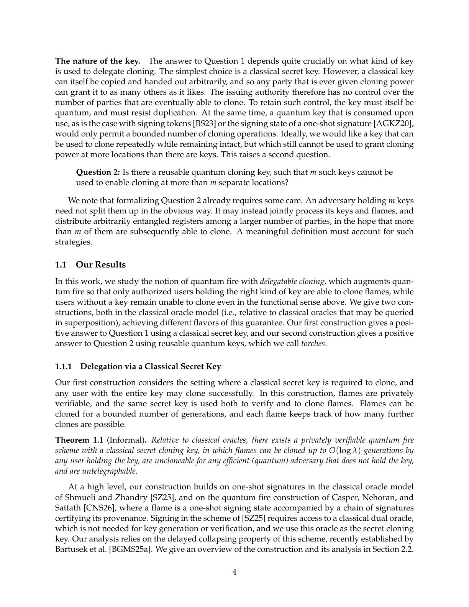
<figcaption class="paper-figure-caption"><b>Fig 3.</b> Low-resolution page preview, page 4</figcaption>
</figure>
<figure class="paper-figure-card">
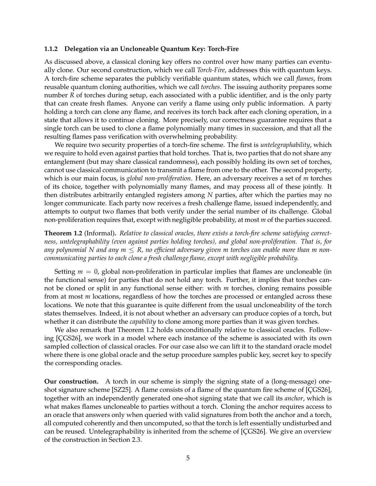
<figcaption class="paper-figure-caption"><b>Fig 4.</b> Low-resolution page preview, page 5</figcaption>
</figure>
<figure class="paper-figure-card">
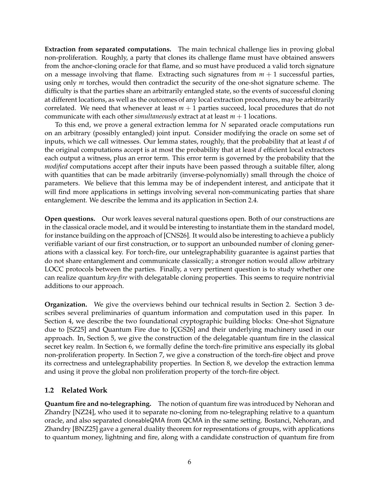
<figcaption class="paper-figure-caption"><b>Fig 5.</b> Low-resolution page preview, page 6</figcaption>
</figure>
</div>

<p><strong>Summary.</strong> This paper develops 'delegatable quantum fire,' a cryptographic primitive that restricts the ability to clone quantum states to only those possessing a specific key. It provides two constructions, one using a classical key and another using reusable quantum keys called 'torches.' The work advances quantum cryptography by ensuring that cloning power can be precisely controlled and limited.</p>
<p><strong>Why it may be interesting.</strong> While highly theoretical, the concepts of controlled quantum state manipulation and key-based access control are fundamental to quantum cryptography, which underpins future quantum networking and secure computation.</p>
<details>
<summary>Detailed structure</summary>
<p><strong>Main problem.</strong> The paper addresses the need to restrict the ability to clone quantum states (quantum fire) to only authorized parties by introducing key-based delegation mechanisms.</p>
<p><strong>Main result.</strong> Two constructions are presented: one using a classical secret key and another, 'torch-fire,' using reusable quantum keys ('torches') that limit cloning to the number of available keys.</p>
<p><strong>Method.</strong> The work is developed in the classical-oracle model, building upon existing quantum cryptographic primitives like one-shot signatures and quantum fire.</p>
<p><strong>Model / system.</strong> The model is based on quantum information theory, involving quantum states called 'flames' and 'torches,' and relies on the framework of quantum oracles.</p>
<p><strong>Key observables.</strong> The ability to clone a flame state, the number of cloning generations allowed, and the global non-proliferation of cloning capability.</p>
<p><strong>Important parameters / regimes.</strong> The number of available torches ($m$), the number of cloning generations ($O(\log \lambda)$), and the error bound in circuit approximations ($\leq 2\sqrt{d}$).</p>
<p><strong>Assumptions / limitations.</strong> The constructions are relative to classical oracles, and the analysis relies on the 'delayed collapsing property' of the underlying schemes.</p>
<p><strong>Figures summary.</strong> Not specified.</p>
<p><strong>Paper structure.</strong> The paper first establishes the problem of delegating quantum fire, then presents two constructions (classical key and torch-fire) addressing key-controlled cloning. Later sections detail the circuit implementation of these concepts, including the 'Fire.TagO' circuit and the approximation of general quantum queries.</p>
</details>
<details>
<summary>Abstract</summary>
<p>Quantum fire is a recently introduced cryptographic primitive consisting of efficiently preparable quantum states, called \emph{flames}, that admit efficient cloning but resist efficient telegraphing, namely reconstruction via classical communication without preshared entanglement. In all prior constructions of quantum fire, cloning is a public operation that requires no separate key and every holder of a flame state can clone it. For applications to access control, however, an issuer may wish to delegate cloning to designated quantum servers while withholding this capability from other flame holders. To address this, we introduce \emph{delegatable quantum fire}, in which cloning requires a separate key.   We give two constructions in the classical-oracle model. Our first construction uses a classical secret key which enables cloning, and any user with the entire key may clone successfully. Our second construction, which we call \emph{torch-fire}, uses quantum cloning keys, called \emph{torches}, which enable cloning while remaining unaffected in the process but cannot otherwise be split or delegated to enable additional cloning. An efficient adversary given $m$ torches cannot, except with negligible probability, enable more than $m$ noncommunicating parties to each clone a fresh, independently issued challenge flame. The adversary may jointly process its resources before separating the parties and distribute arbitrarily entangled registers among them. Both constructions are in the oracle model, relying on public classical oracles that allow queries in quantum superposition.</p>
</details>
<p><sub><a href="#top">↑ back to top</a></sub></p>

<p><a id="paper-2610.02501"></a></p>
<h3 id="quantum-transmission-in-1d-disordered-stealthy-hyperuniform-kronig-penney-like-models"><a href="http://arxiv.org/abs/2610.02501v1">Quantum transmission in 1D disordered stealthy hyperuniform Kronig--Penney-like models</a></h3>
<p><strong>Authors:</strong> Shaobing Yuan, Carlo Vanoni, Salvatore Torquato<br>
<strong>Type:</strong> theory · <strong>Category:</strong> disordered systems and neural networks · <strong>PDF:</strong> <a href="https://arxiv.org/pdf/2610.02501v1">https://arxiv.org/pdf/2610.02501v1</a><br>
<strong>Analysis basis:</strong> full PDF text, analyzed in chunks
<strong>Topic relevance:</strong> <code>Keldysh / 2PI / non-Gaussian methods</code> <strong>2/5</strong></p>
<div class="figure-strip-hint">↔ Scroll figures horizontally</div>
<div class="paper-figures-scroll">
<figure class="paper-figure-card">
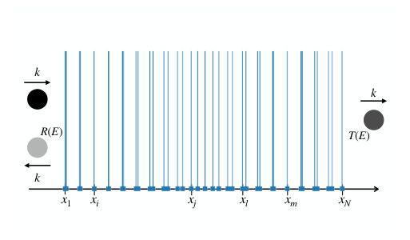
<figcaption class="paper-figure-caption"><b>Fig 1.</b> FIG. 1. Schematic of the quantum particle transmission through the disordered potentials V (x) in Eq. (1). A par- ticle coming from x = −∞with momentum k and energy E = k2 (black) scatters against N δ-functions, and is trans- mitted with probability T(E), while it is reflected with prob- ability R(E).</figcaption>
</figure>
<figure class="paper-figure-card">
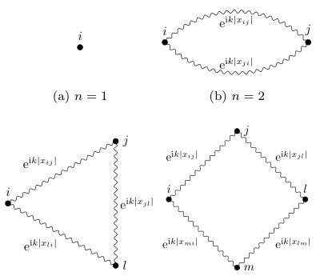
<figcaption class="paper-figure-caption"><b>Fig 2.</b> FIG. 2. Feynman diagrams of the first 4 orders under free boundary conditions. Each vertex (e.g., i) contributes a fac- tor of i 2k, and each edge between two vertices, e.g., i, j, contributes a factor of ei|xij| ≡ei|xij|, where we denote xij ≡xi −xj. When evaluated by the summation over each vertex, e.g., i, from i = 1 to i = N, the n-th-order diagram gives Tr[Gn].</figcaption>
</figure>
<figure class="paper-figure-card">
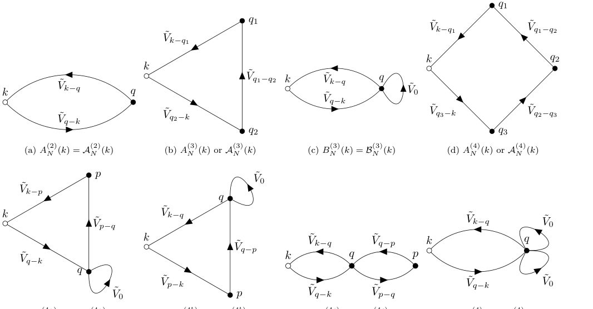
<figcaption class="paper-figure-caption"><b>Fig 3.</b> FIG. 3. Feynman diagrams of the first 4 orders under periodic boundary conditions. AN and AN denote 1-loop diagrams, BN and BN denote 2-loop diagrams, and so on. For a fixed k, AN, BN, . . . are given by evaluating the diagrams under the self-avoiding summation P</figcaption>
</figure>
</div>

<p><strong>Summary.</strong> This theoretical work analyzes quantum transport in 1D disordered systems exhibiting stealthy hyperuniformity. By developing a high-order perturbation theory, the authors show that the SHU condition causes the leading localization effects to vanish up to the third order. This demonstrates that structural order can parametrically enhance quantum transmission, leading to a much weaker, fourth-order dependence on disorder strength.</p>
<p><strong>Why it may be interesting.</strong> The systematic, high-order perturbative calculation provides deep insight into how specific geometric constraints (hyperuniformity) can fundamentally alter the scaling of quantum localization, which is a core topic in condensed matter theory.</p>
<details>
<summary>Detailed structure</summary>
<p><strong>Main problem.</strong> The paper investigates quantum transmission and localization in one-dimensional disordered systems characterized by 'stealthy hyperuniform (SHU)' disorder.</p>
<p><strong>Main result.</strong> The SHU condition causes the leading attenuation of the Lyapunov exponent to vanish up to the third order in the scattering strength, shifting the leading localization dependence to the fourth order ($O(W^4)$).</p>
<p><strong>Method.</strong> The authors employ advanced perturbative quantum field theory techniques, utilizing Feynman diagrams to calculate the Lyapunov exponent and inverse lifetime in the thermodynamic limit.</p>
<p><strong>Model / system.</strong> The model is a Kronig-Penney-like system describing quantum particle propagation through a continuum of identical point scatterers in 1D, governed by a delta-function potential.</p>
<p><strong>Key observables.</strong> Lyapunov exponent ($\lambda(k)$), transmission $T(E)$, inverse lifetime ($1/	au(k)$), and the structure factor $S(k)$.</p>
<p><strong>Important parameters / regimes.</strong> The scattering strength ($W$), the wave vector ($k$), and the hyperuniformity cutoff ($K$).</p>
<p><strong>Assumptions / limitations.</strong> The analysis relies on taking the thermodynamic limit ($N 	o \infty$) and making specific approximations for summing over momenta in the perturbative expansion.</p>
<p><strong>Figures summary.</strong> Figure 3 illustrates Feynman diagrams for calculating scattering coefficients up to the fourth order, distinguishing between different types of loop summations (e.g., 1-loop, 2-loop).</p>
<p><strong>Paper structure.</strong> The paper systematically develops the perturbative calculation of the Lyapunov exponent and inverse lifetime, first for free boundary conditions, and then adapts the formalism for periodic boundary conditions, culminating in the analysis of the SHU regime.</p>
</details>
<details>
<summary>Abstract</summary>
<p>Disordered stealthy hyperuniform (SHU) systems are emerging as platforms for controlling classical and quantum transport due to vanishing single-scattering contributions in the stealthy regime. Here, to our knowledge, we present the first perturbation theory of one-dimensional quantum transport through a continuum of identical point scatterers with SHU positional disorder. Our perturbation theory indicates the exact cancellation of all the lower-order terms due to the Fourier-space stealthy condition $S(q)=0$, and the further suppression of the lowest non-vanishing fourth order in the Lyapunov exponent $λ(k)$ due to the real-space hyperuniform constraint $\lim\limits_{D\to\infty}σ_D^2=c<\infty$. Our findings presents universal implications of the general wave-propagation phenomena in disordered SHU systems.</p>
</details>
<p><sub><a href="#top">↑ back to top</a></sub></p>

<p><a id="paper-2610.03360"></a></p>
<h3 id="rate-optimal-quantum-discrete-simulation-optimization"><a href="http://arxiv.org/abs/2610.03360v1">Rate-Optimal Quantum Discrete Simulation Optimization</a></h3>
<p><strong>Authors:</strong> Mingjie Hu, Jian-Qiang Hu<br>
<strong>Type:</strong> both · <strong>Category:</strong> quantum information and computing · <strong>PDF:</strong> <a href="https://arxiv.org/pdf/2610.03360v1">https://arxiv.org/pdf/2610.03360v1</a><br>
<strong>Analysis basis:</strong> full PDF text, analyzed in chunks
<strong>Topic relevance:</strong> <code>quantum measurements</code> <strong>2/5</strong></p>
<div class="figure-strip-hint">↔ Scroll figures horizontally</div>
<div class="paper-figures-scroll">
<figure class="paper-figure-card">
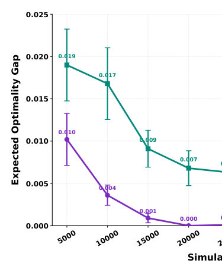
<figcaption class="paper-figure-caption"><b>Fig 1.</b> Figure 1 Expected Optimality Gap under Bernoulli Distribution</figcaption>
</figure>
<figure class="paper-figure-card">
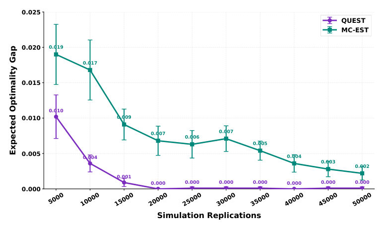
<figcaption class="paper-figure-caption"><b>Fig 2.</b> Figure 2 compares the final expected optimality gaps of QUEST and MC-EST under different</figcaption>
</figure>
<figure class="paper-figure-card">
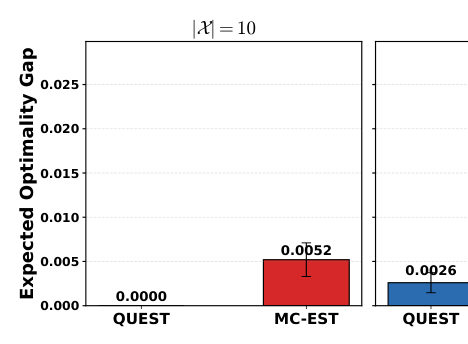
<figcaption class="paper-figure-caption"><b>Fig 3.</b> Figure 2 Expected Optimality Gap under Different Problem Sizes (𝑇= 10000)</figcaption>
</figure>
<figure class="paper-figure-card">
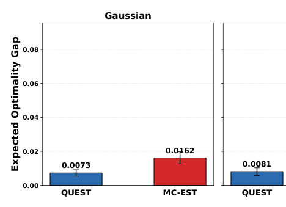
<figcaption class="paper-figure-caption"><b>Fig 4.</b> Figure 3 Expected Optimality Gap under Different Performance Distributions (𝑇= 10000)</figcaption>
</figure>
<figure class="paper-figure-card">
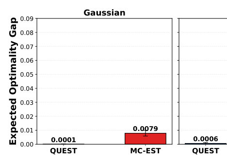
<figcaption class="paper-figure-caption"><b>Fig 5.</b> Figure 4 Expected Optimality Gap under Different Performance Distributions (𝑇= 20000)</figcaption>
</figure>
</div>

<p><strong>Summary.</strong> This paper develops a theoretical framework to determine the quantum advantage in discrete simulation optimization under a fixed budget. By establishing a minimax lower bound, the authors propose the QUEST algorithm, which is proven to achieve this optimal rate. The work provides strong theoretical and empirical evidence for quantum speedup in complex simulation estimation tasks.</p>
<p><strong>Why it may be interesting.</strong> While focused on optimization, the development of the quantum simulation oracle and the analysis of fundamental quantum lower bounds for estimation tasks are highly relevant to understanding resource scaling in quantum information processing.</p>
<details>
<summary>Detailed structure</summary>
<p><strong>Main problem.</strong> The paper investigates whether quantum computing can accelerate the convergence rate of discrete simulation optimization problems under a fixed simulation budget.</p>
<p><strong>Main result.</strong> The proposed algorithm, QUEST, achieves an expected optimality gap of order O((|X| log T)/T), matching the established quantum minimax lower bound up to logarithmic factors.</p>
<p><strong>Method.</strong> The authors establish a minimax lower bound by reducing the problem to a sequential quantum phase-testing problem, and then propose an adaptive quantum algorithm combining quantum Monte Carlo with sequential elimination.</p>
<p><strong>Model / system.</strong> The problem is modeled using a quantum simulation oracle, which acts as the quantum analogue for estimating the expected performance of a discrete decision variable $x$ in a stochastic system.</p>
<p><strong>Key observables.</strong> Expected optimality gap, which measures the difference between the optimal decision's mean performance and the algorithm's recommended decision's mean performance.</p>
<p><strong>Important parameters / regimes.</strong> Fixed simulation budget ($T$), the number of decisions ($|X|$), and the convergence rate of the expected optimality gap.</p>
<p><strong>Assumptions / limitations.</strong> The analysis assumes that the centered simulation output is $\sigma$-sub-Gaussian, and the performance is measured under a fixed-budget setting.</p>
<p><strong>Figures summary.</strong> Numerical experiments show that QUEST significantly reduces the expected optimality gap compared to classical Monte Carlo estimation (MC-EST) across varying problem sizes and distributions.</p>
<p><strong>Paper structure.</strong> The paper first formulates the problem and defines the quantum oracle, then establishes the minimax lower bounds, proposes the QUEST algorithm, proves its rate optimality, and concludes with numerical validation.</p>
</details>
<details>
<summary>Abstract</summary>
<p>Quantum computing has developed rapidly in recent years and has shown potential advantages over classical computing in various domains. In this paper, we study whether quantum computing can accelerate the convergence rate of discrete simulation optimization in the fixed-budget setting. We first formulate the quantum discrete simulation optimization problem by defining the quantum simulation oracle, the algorithmic performance measure, and the corresponding optimality guarantee. Based on this formulation, we establish a minimax lower bound on the expected optimality gap for any quantum algorithm. The lower bound analysis reduces the discrete simulation optimization problem to a sequential quantum phase-testing problem, and the resulting lower-bound argument may be of independent interest. By comparing the quantum lower bound with its classical counterpart, we show that the optimal convergence rate in the quantum setting exhibits a quadratic improvement in its dependence on the simulation budget, at the cost of a worse dependence on the number of decisions. We then propose the first fixed-budget quantum algorithm, called \textsc{QUEST}, for discrete simulation optimization. The algorithm combines a quantum Monte Carlo subroutine with a sequential elimination framework and uses a slow-measurement mechanism to help preserve quantum superposition during the optimization process. We prove that \textsc{QUEST} achieves the optimal convergence rate up to logarithmic factors. Numerical experiments further show that \textsc{QUEST} outperforms its classical counterpart, which provides empirical evidence for the quantum advantage in improving the convergence rate of discrete simulation optimization algorithms.</p>
</details>
<p><sub><a href="#top">↑ back to top</a></sub></p>

<p><a id="paper-2610.03700"></a></p>
<h3 id="scalable-passive-qram"><a href="http://arxiv.org/abs/2610.03700v1">Scalable Passive QRAM</a></h3>
<p><strong>Authors:</strong> Siddhartha Jain, Alexander M. Dalzell, Connor T. Hann<br>
<strong>Type:</strong> theory · <strong>Category:</strong> quantum information and computing · <strong>PDF:</strong> <a href="https://arxiv.org/pdf/2610.03700v1">https://arxiv.org/pdf/2610.03700v1</a><br>
<strong>Analysis basis:</strong> full PDF text, analyzed in chunks
<strong>Topic relevance:</strong> <code>analog quantum simulation</code> <strong>2/5</strong></p>
<div class="figure-strip-hint">↔ Scroll figures horizontally</div>
<div class="paper-figures-scroll">
<figure class="paper-figure-card">
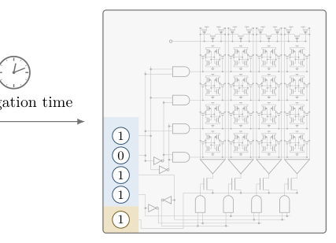
<figcaption class="paper-figure-caption"><b>Fig 1.</b> Figure 1: Illustration of passive RAM query</figcaption>
</figure>
<figure class="paper-figure-card">
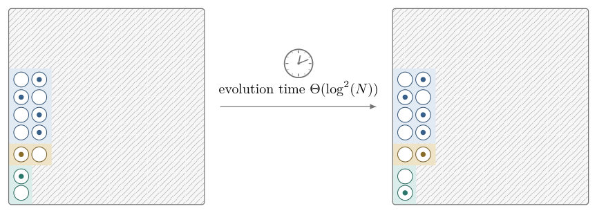
<figcaption class="paper-figure-caption"><b>Fig 2.</b> Figure 2: Illustration of passive QRAM query accomplished by our construction. To match the notation we adopt in Section 3, we depict activated qubits in |1⟩as • and |0⟩as empty. The Hamiltonian is hard-coded into the device at time of fabrication (here indicated by the hatching), and is always on. We show that our construction has robustness to imperfections in the manufacture of the chip and to thermal noise in the initial state of the O(N) auxiliary qubits.</figcaption>
</figure>
<figure class="paper-figure-card">
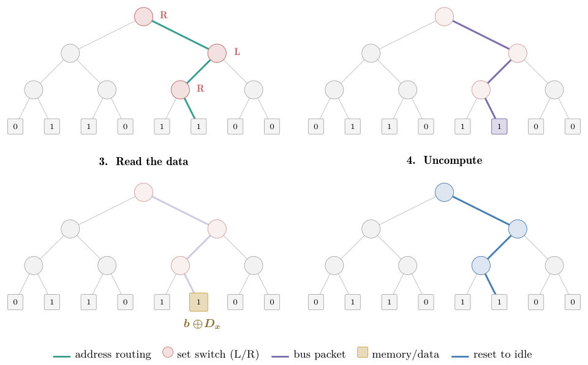
<figcaption class="paper-figure-caption"><b>Fig 3.</b> Figure 3: The bucket-brigade query on a height-3 tree for address x = 101. (1) A carrier routes the address down the tree, setting each node’s switch; (2) the bus packet descends the routed path; (3) the target memory is read into the bus at the leaf; (4) the bus ascends and the path is uncomputed back to idle.</figcaption>
</figure>
<figure class="paper-figure-card">
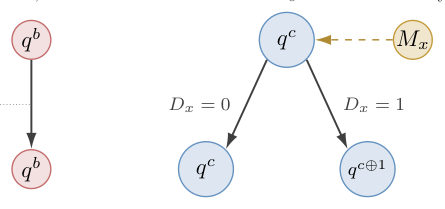
<figcaption class="paper-figure-caption"><b>Fig 4.</b> Figure 4: The three kinds of Hamiltonian terms.</figcaption>
</figure>
<figure class="paper-figure-card">
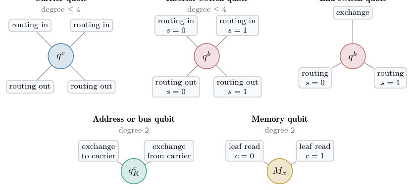
<figcaption class="paper-figure-caption"><b>Fig 5.</b> Figure 5: Number of Hamiltonian terms incident on each qubit type. A carrier or interior switch qubit can participate in four routing terms. An end switch qubit participates in one exchange term and at most two routing terms. Each address or bus qubit participates in two exchange terms, and each memory qubit in two leaf-read terms.</figcaption>
</figure>
</div>

<p><strong>Summary.</strong> This paper presents a theoretical blueprint for building a scalable Quantum Random Access Memory (QRAM) that operates passively, meaning its energy consumption scales sublinearly with the memory size. By evolving a fixed, local Hamiltonian, the authors achieve a significantly reduced energy cost ($O(\log N)$) and runtime ($O(\log^2 N)$) compared to conventional active QRAM implementations. This work advances the feasibility of building large-scale quantum processors by addressing a major resource bottleneck.</p>
<p><strong>Why it may be interesting.</strong> The focus on Hamiltonian engineering to achieve sublinear energy scaling ($O(\log N)$) for a fundamental quantum primitive like QRAM is highly relevant to open quantum systems and quantum hardware design.</p>
<details>
<summary>Detailed structure</summary>
<p><strong>Main problem.</strong> The paper addresses the fundamental challenge of quantum data loading by proposing a method to implement Quantum Random Access Memory (QRAM) in a scalable, passive manner.</p>
<p><strong>Main result.</strong> It proves the principle of a scalable, passive QRAM by evolving a time-independent, 4-local Hamiltonian, achieving an energy cost of $O(\log N)$ and a runtime of $O(\log^2 N)$.</p>
<p><strong>Method.</strong> The approach utilizes the time evolution governed by a pre-manufactured, time-independent Hamiltonian, bypassing the need for active, gate-based operations that typically incur linear energy costs.</p>
<p><strong>Model / system.</strong> The model is a quantum circuit implemented via Hamiltonian evolution on an auxiliary register, requiring only 4-local interactions. The system is designed to be hardware agnostic but is noted as suitable for superconducting qubits.</p>
<p><strong>Key observables.</strong> Energy cost per query ($O(\log N)$), Runtime ($O(\log^2 N)$), and the successful mapping of the QRAM operation via unitary evolution.</p>
<p><strong>Important parameters / regimes.</strong> The memory size $N=2^n$, the number of qubits $n$, and the required Hamiltonian locality (4-local).</p>
<p><strong>Assumptions / limitations.</strong> The construction assumes the existence of a time-independent Hamiltonian and relies on the ability to engineer fixed, low-degree local couplings.</p>
<p><strong>Figures summary.</strong> Figure 1 illustrates the passive RAM query depth, while Figure 2 shows the QRAM query process initiated by exciting a 'start' auxiliary qubit, completing after $\Theta(\log^2 N)$ evolution time.</p>
<p><strong>Paper structure.</strong> The paper establishes the problem (active vs. passive QRAM), presents the blueprint using a specific Hamiltonian construction, derives the complexity bounds ($O(\log N)$ energy, $O(\log^2 N)$ time), and compares this passive approach against conventional active methods.</p>
</details>
<details>
<summary>Abstract</summary>
<p>We present a blueprint for implementing the physical QRAM operation in a scalable, passive manner, proving its feasibility in principle. Our construction is passive because for an $n$-qubit address over $N = 2^n$ memory bits the energy cost per QRAM query is $O(\log N)$, and to our knowledge it is the first construction to use $\operatorname{polylog} N$ energy. The runtime for each query is $O(\log^2 N)$. It is achieved by evolving a pre-manufactured time-independent 4-local Hamiltonian with $O(N)$ terms where every qubit participates in at most 4 terms.</p>
</details>
<p><sub><a href="#top">↑ back to top</a></sub></p>

<p><a id="paper-2610.02997"></a></p>
<h3 id="two-qutrit-werner-state-is-always-local"><a href="http://arxiv.org/abs/2610.02997v1">Two-qutrit Werner state is always local</a></h3>
<p><strong>Authors:</strong> Paweł Caban, Muhammad Mohsin<br>
<strong>Type:</strong> theory · <strong>Category:</strong> quantum information and computing · <strong>PDF:</strong> <a href="https://arxiv.org/pdf/2610.02997v1">https://arxiv.org/pdf/2610.02997v1</a><br>
<strong>Analysis basis:</strong> full PDF text, analyzed in chunks
<strong>Topic relevance:</strong> <code>quantum measurements</code> <strong>2/5</strong></p>
<div class="figure-strip-hint">↔ Scroll figures horizontally</div>
<div class="paper-figures-scroll">
<figure class="paper-figure-card">
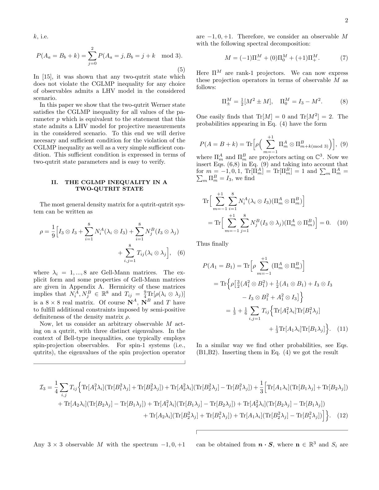
<figcaption class="paper-figure-caption"><b>Fig 1.</b> Low-resolution page preview, page 2</figcaption>
</figure>
<figure class="paper-figure-card">
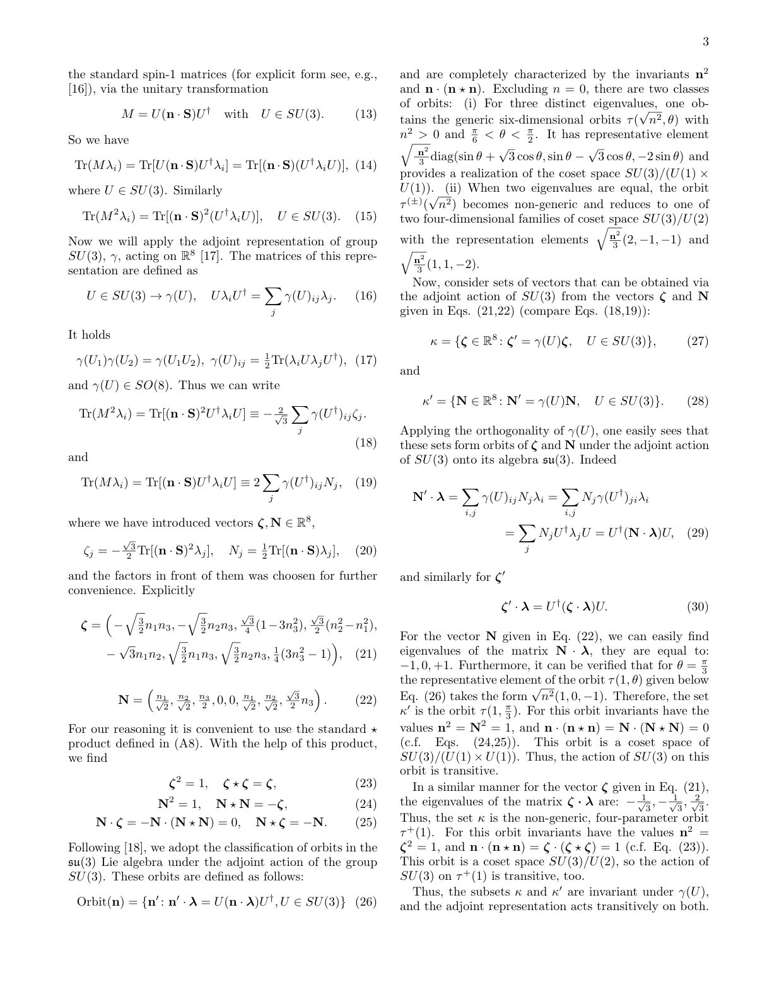
<figcaption class="paper-figure-caption"><b>Fig 2.</b> Low-resolution page preview, page 3</figcaption>
</figure>
<figure class="paper-figure-card">
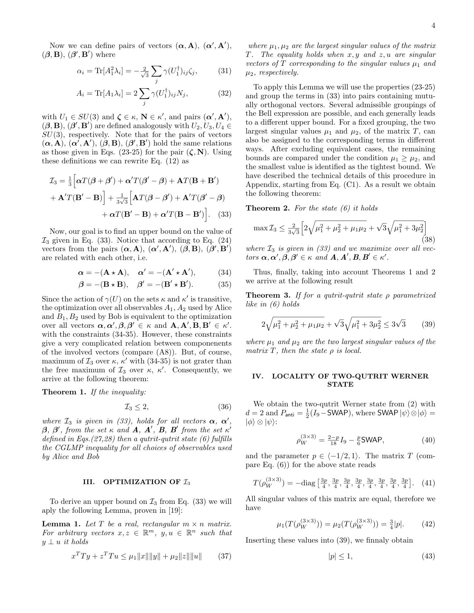
<figcaption class="paper-figure-caption"><b>Fig 3.</b> Low-resolution page preview, page 4</figcaption>
</figure>
<figure class="paper-figure-card">
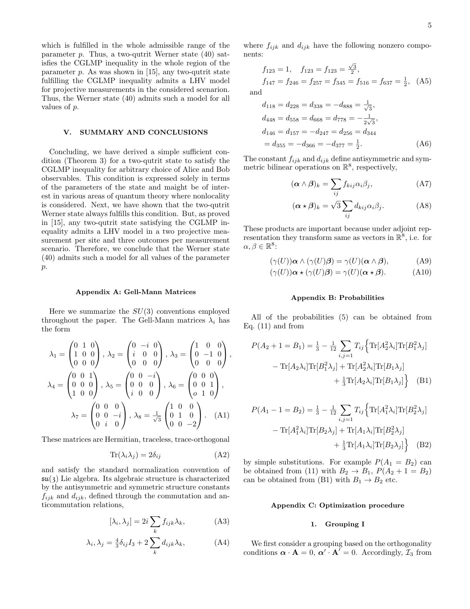
<figcaption class="paper-figure-caption"><b>Fig 4.</b> Low-resolution page preview, page 5</figcaption>
</figure>
<figure class="paper-figure-card">
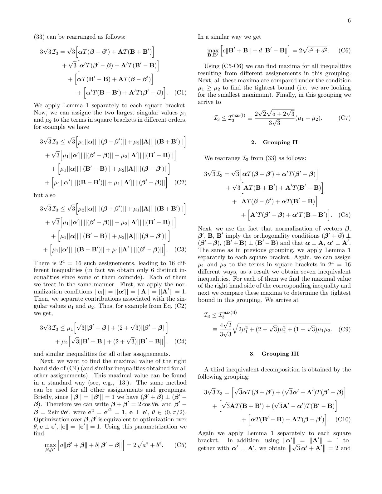
<figcaption class="paper-figure-caption"><b>Fig 5.</b> Low-resolution page preview, page 6</figcaption>
</figure>
</div>

<p><strong>Summary.</strong> This paper proves that the two-qutrit Werner state is always local by showing it satisfies the Collins-Gisin-Linden-Massar-Popescu (CGLMP) inequality. The authors achieve this by deriving a necessary and sufficient condition for locality and then rigorously bounding the relevant correlation function ($I_3$) for the Werner state. The result confirms that this specific entangled state cannot violate local realism under the tested measurement settings.</p>
<p><strong>Why it may be interesting.</strong> This work provides a rigorous demonstration of local realism for a specific class of entangled states (Werner states) in a multipartite setting, which is fundamental to understanding the boundary between quantum correlations and classical physics.</p>
<details>
<summary>Detailed structure</summary>
<p><strong>Main problem.</strong> To prove that the two-qutrit Werner state is always local, meaning it can be described by a local hidden-variable model for specific projective measurements.</p>
<p><strong>Main result.</strong> The Werner state satisfies the Collins-Gisin-Linden-Massar-Popescu (CGLMP) inequality for all parameter values, confirming its local realism.</p>
<p><strong>Method.</strong> The authors derived a sufficient condition for satisfying the CGLMP inequality and then used algebraic techniques involving the adjoint representation of SU(3) to find the tightest upper bound for the relevant correlation quantity ($I_3$).</p>
<p><strong>Model / system.</strong> The system under consideration is the two-qutrit Werner state, $
ho_{W}$, analyzed in a scenario involving two projective measurements per site, each with three outcomes.</p>
<p><strong>Key observables.</strong> The CGLMP inequality, quantified by the quantity $I_3$, and the singular values ($\mu_1, \mu_2$) of a related matrix $T$.</p>
<p><strong>Important parameters / regimes.</strong> The parameter $p$ characterizing the Werner state, which is shown to be admissible for all values in its defined range.</p>
<p><strong>Assumptions / limitations.</strong> The analysis assumes that satisfying the CGLMP inequality for arbitrary observables is equivalent to admitting a local hidden-variable model for this specific measurement setting.</p>
<p><strong>Figures summary.</strong> Not specified.</p>
<p><strong>Paper structure.</strong> The paper first establishes the CGLMP inequality for the two-qutrit system. It then derives a sufficient condition for satisfying this inequality by relating it to vector properties in the $su(3)$ Lie algebra. Finally, it optimizes the bound $I_3$ by comparing bounds derived from three different groupings of the Bell expression.</p>
</details>
<details>
<summary>Abstract</summary>
<p>In our paper, we show that a two-qutrit Werner state admits a local hidden-variable model for all values of the parameter in a scenario involving two projective measurements per site, with three outcomes per measurement. To this end, we derive a simple sufficient condition under which a two-qutrit state satisfies the Collins-Gisin-Linden-Massar-Popescu inequality for arbitrary choices of Alice's and Bob's observables, and show that the Werner state always satisfies this condition. Next, we use the fact that any two-qutrit state satisfying the Collins-Gisin-Linden-Massar-Popescu inequality for arbitrary choices of Alice's and Bob's observables admits a local hidden variable model.</p>
</details>
<p><sub><a href="#top">↑ back to top</a></sub></p>

<p><a id="paper-2610.03610"></a></p>
<h3 id="decohering-kitaevs-sixteenfold-way-a-holographic-approach"><a href="http://arxiv.org/abs/2610.03610v1">Decohering Kitaev's Sixteenfold Way: A Holographic Approach</a></h3>
<p><strong>Authors:</strong> Shuyu Zhang, Linhao Li, Zhen Bi, Tzu-Chieh Wei, Zijian Song<br>
<strong>Type:</strong> theory · <strong>Category:</strong> other · <strong>PDF:</strong> <a href="https://arxiv.org/pdf/2610.03610v1">https://arxiv.org/pdf/2610.03610v1</a><br>
<strong>Analysis basis:</strong> full PDF text, analyzed in chunks
<strong>Topic relevance:</strong> <code>Keldysh / 2PI / non-Gaussian methods</code> <strong>1/5</strong> · <code>analog quantum simulation</code> <strong>1/5</strong> · <code>correlated / nonlocal dissipation</code> <strong>1/5</strong> · <code>driven-dissipative phase transition</code> <strong>1/5</strong> · <code>methods for driven-dissipative</code> <strong>1/5</strong> · <code>quantum measurements</code> <strong>1/5</strong></p>
<div class="figure-strip-hint">↔ Scroll figures horizontally</div>
<div class="paper-figures-scroll">
<figure class="paper-figure-card">
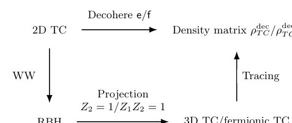
<figcaption class="paper-figure-caption"><b>Fig 1.</b> FIG. 2. The commutative diagram of toric code decoherence. Decoherence can be carried out by first lifting to the RBH cluster state, making measurements, then trace out the bot- tom half.</figcaption>
</figure>
<figure class="paper-figure-card">
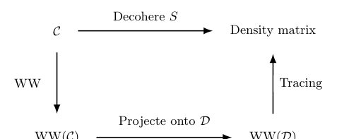
<figcaption class="paper-figure-caption"><b>Fig 2.</b> FIG. 3. Commutative diagram corresponding to decohering S in the topological order C. We first lift to the 3D WW model of C, keeping only string-nets labeled by D, then trace out the bottom half.</figcaption>
</figure>
<figure class="paper-figure-card">
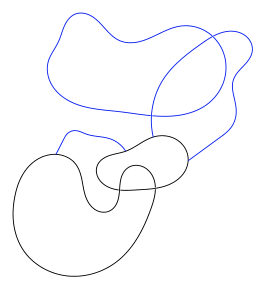
<figcaption class="paper-figure-caption"><b>Fig 3.</b> FIG. 4. A generic string-net state of the Ising Walker-Wang model. The black lines are labeled by σ, which must form loops. The blue lines are labeled by f, which can either form loops or end on σ-loops.</figcaption>
</figure>
<figure class="paper-figure-card">
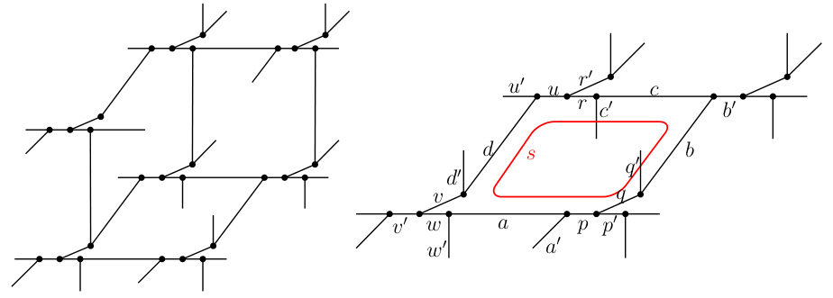
<figcaption class="paper-figure-caption"><b>Fig 4.</b> FIG. 5. (Left) The lattice structure of the Walker-Wang model. Each vertex is trivalent, and a local Hilbert space spanned by the simple objects of the input category is associated with each edge. Each plaquette has 10 boundary edges, together with 10 outgoing edges attached to its 10 vertices. (Right) Inserting an s loop on the plaquette.</figcaption>
</figure>
<figure class="paper-figure-card">

<figcaption class="paper-figure-caption"><b>Fig 5.</b> FIG. 6. The smooth boundary of the WW model. The boundary terminates in the vertical direction, hence all edges pointing up from the boundary are removed. The fusion of the anyon loop s into the lattice defines the boundary plaquette operators.</figcaption>
</figure>
</div>

<p><strong>Summary.</strong> This paper develops a holographic approach to study how topological order decoheres, using the challenging Kitaev's sixteenfold way as a key example. It conjectures that decoherence can be understood by mapping the process to a pure state phase transition in the system's higher-dimensional bulk counterpart. This offers a systematic tool for analyzing mixed-state quantum matter in topological phases.</p>
<p><strong>Why it may be interesting.</strong> This work provides a powerful, systematic theoretical framework (holography) to analyze decoherence in highly constrained quantum systems, linking boundary physics (2D) to bulk dynamics (3D) via phase transitions.</p>
<details>
<summary>Detailed structure</summary>
<p><strong>Main problem.</strong> The paper addresses the complex issue of anyon decoherence in 2D topological order, specifically tackling Kitaev's sixteenfold way which involves chiral phases lacking simple commuting projector Hamiltonians.</p>
<p><strong>Main result.</strong> They establish a holographic connection showing that the decoherence process can be mapped to a pure state phase transition in the system's 3D counterpart, yielding intrinsically mixed-state topological order.</p>
<p><strong>Method.</strong> The core method involves a three-step holographic construction: lifting the 2D order to a Walker-Wang model, transitioning to another model, and finally tracing out the bulk degrees of freedom.</p>
<p><strong>Model / system.</strong> The study focuses on 2D topological orders, exemplified by the 2D toric code and Kitaev's sixteenfold way. The holographic mapping utilizes 3D systems like the Raussendorf-Bravyi-Harrington (RBH) cluster state and the 3D fermionic toric code (fTC).</p>
<p><strong>Key observables.</strong> Density matrix ($
ho$), topological order, 1-form symmetries, Quantum Markov length ($\xi$), and the resulting state being intrinsically mixed.</p>
<p><strong>Important parameters / regimes.</strong> The decoherence parameter $p$ (in local channels), and the large parameter $\Lambda$ used in the holographic projection limit.</p>
<p><strong>Assumptions / limitations.</strong> The primary conjecture is that the decoherence-induced density matrix can be obtained via the specific three-step holographic procedure. It also assumes the existence of a systematic method using commuting projector Hamiltonians.</p>
<p><strong>Figures summary.</strong> Figures illustrate the structure of entanglers (U) for various models (fermionic toric code, RBH state, semionic WW model) and show the mathematical decomposition of the resulting Hamiltonians using various Clifford Hierarchy gates.</p>
<p><strong>Paper structure.</strong> The paper reviews 2D toric code decoherence (Sec. II), builds the general 3D holographic framework (Sec. III), provides detailed examples focusing on Kitaev's sixteenfold way (Sec. IV), and concludes with general implications (Sec. V).</p>
</details>
<details>
<summary>Abstract</summary>
<p>We study anyon decoherence in 2D topological order, with the fermion decoherence in Kitaev's sixteenfold way as explicit examples. The sixteenfold way includes chiral topological phases, which are believed to admit no commuting projector Hamiltonian, making it challenging to study their decoherence directly. We further conjecture the density matrix produced by this decoherence induced phase transition can be obtained by a three-step procedure: first lift the topological order to its Walker-Wang model, followed by a transition to another Walker-Wang model, and finally trace over the bulk degrees of freedom. This establishes a connection between the decoherence of a topological order and a pure state phase transition in its 3D counterpart. Many examples are given. In particular, we show that decohering the fermion in each of the sixteen states always yields an intrinsically mixed-state topological order, a consequence of the fact the corresponding 3D bulk always transits into the 3D fermionic toric code (fTC). Our result suggests a systematic method for studying anyon decoherence in chiral topological orders at the level of commuting projector Hamiltonians.</p>
</details>
<p><sub><a href="#top">↑ back to top</a></sub></p>

<p><a id="paper-2610.03683"></a></p>
<h3 id="modified-logarithmic-sobolev-inequality-for-1d-non-commuting-hamiltonians"><a href="http://arxiv.org/abs/2610.03683v1">Modified logarithmic Sobolev inequality for 1D non-commuting Hamiltonians</a></h3>
<p><strong>Authors:</strong> Ángela Capel, David Pérez-García, Matteo Scandi<br>
<strong>Type:</strong> theory · <strong>Category:</strong> statistical mechanics · <strong>PDF:</strong> <a href="https://arxiv.org/pdf/2610.03683v1">https://arxiv.org/pdf/2610.03683v1</a><br>
<strong>Analysis basis:</strong> full PDF text, analyzed in chunks
<strong>Topic relevance:</strong> <code>analog quantum simulation</code> <strong>1/5</strong> · <code>correlated / nonlocal dissipation</code> <strong>1/5</strong> · <code>driven-dissipative phase transition</code> <strong>1/5</strong> · <code>methods for driven-dissipative</code> <strong>1/5</strong> · <code>non-equilibrium universality</code> <strong>1/5</strong> · <code>scars &amp; prethermalization</code> <strong>1/5</strong></p>
<div class="figure-strip-hint">↔ Scroll figures horizontally</div>
<div class="paper-figures-scroll">
<figure class="paper-figure-card">

<figcaption class="paper-figure-caption"><b>Fig 1.</b> Figure 1: Overlapping blocks A = S i Ai, B = S j Bj and a buffered core. The gaps Xi, Yj form Λ \ A, Λ \ B. Each site lies in at most Cβ enlarged intervals S[b], independently of n. The intervals specify update centres; the maps have decaying tails.</figcaption>
</figure>
<figure class="paper-figure-card">

<figcaption class="paper-figure-caption"><b>Fig 2.</b> Figure 2: The two decompositions in Lemma 3.2. (a) The complements are X = B\A and Y = A\B; tracing out the overlap A ∩B leaves the marginal on XY in (3.3). (b) For m = 3 and the merger j = 2 in (3.6), the systems are P1 = A1, A2, and C2 = X ∪A3. The green pieces form the generally disconnected conditioning set C2. The interval arrangements are illustrative: the lemma holds for arbitrary sets.</figcaption>
</figure>
<figure class="paper-figure-card">

<figcaption class="paper-figure-caption"><b>Fig 3.</b> Figure 3: The five-piece approximation on the spin chain. Each ball is a site; the coloured bands and braces specify X, Y1, . . . , Y5, Z. The two dashed cuts split H0 into the three Hamiltonians shown below. The local operators T12 and T45 act on the indicated pairs of separator pieces. Both estimates (3.9) and (3.10) concern this construction.</figcaption>
</figure>
<figure class="paper-figure-card">

<figcaption class="paper-figure-caption"><b>Fig 4.</b> Figure 4: The two geometries in the proof of Lemma 3.5. In (a), we compare the marginals on U before and after removing W from the Hamiltonian. The buffer V = V1V2 separates U from W; we localise the boundary operators to UV1 and use local indistinguishability across V2. Panels (b) and (c) show the original chain and its folding. Each vertical pair of balls in (c) is one folded site, pairing original sites at equal distance from the midpoint. The collars Y1, Y3 have equal lengths. The labels U, V, W in (c) identify the regions to which we apply the comparison from (a). In the folded geometry, removing Y2 is a boundary-removal operation; in the original geometry, it leaves independent left...</figcaption>
</figure>
<figure class="paper-figure-card">

<figcaption class="paper-figure-caption"><b>Fig 5.</b> Figure 5: The three contributions to the defect on the same chain X0A1X1A2X2A3X3. Purple balls are retained sites; hollow grey balls are traced-out sites. In (a), the orange interval X2 is retained as the conditioning system, so the connected conditional MCMI estimate applies. In (b), the orange interval A2 is traced out, leaving the two tails L2 and R2. In (c), further partial traces retain only X0 ∪X1 and X2, giving one merger in the gap marginal. The multiplicative estimate across A2 controls both (b) and (c).</figcaption>
</figure>
</div>

<p><strong>Summary.</strong> This paper proves a Modified Logarithmic Sobolev Inequality (MLSI) for quantum systems with non-commuting Hamiltonians on a 1D chain. By establishing this inequality for heat-bath dynamics, the authors demonstrate that the system rapidly approaches its thermal Gibbs state. This result is crucial for understanding the mixing times of quantum Markov processes in complex, interacting many-body systems.</p>
<p><strong>Why it may be interesting.</strong> The rigorous proof of MLSI in the non-commuting regime is a significant theoretical advance for understanding the convergence rates of quantum thermalization processes.</p>
<details>
<summary>Detailed structure</summary>
<p><strong>Main problem.</strong> The paper aims to prove a Modified Logarithmic Sobolev Inequality (MLSI) for the relative entropy decay in quantum systems governed by non-commuting Hamiltonians.</p>
<p><strong>Main result.</strong> They establish the MLSI with a constant of $\Omega(1/\log n)$ for both the heat-bath and regularised heat-bath dynamics, implying rapid mixing times of order $\mathcal{O}(\log n \cdot \log(n/\epsilon))$ towards the Gibbs state.</p>
<p><strong>Method.</strong> The proof combines advanced techniques including weak quasi-factorisation of relative entropy, decay-of-correlation estimates, and comparisons between conditional entropy and quadratic energy.</p>
<p><strong>Model / system.</strong> The system is a 1D chain of $n$ spins described by a finite-range, non-commuting Hamiltonian. The dynamics are analyzed using quantum Markov semigroups corresponding to heat-bath sampling.</p>
<p><strong>Key observables.</strong> Relative entropy $D(
ho\|\sigma)$, Entropy Production $E_{Pa}(
ho)$, and Quadratic Energy $Q_T(
ho)$.</p>
<p><strong>Important parameters / regimes.</strong> The mixing time depends on $\epsilon$ and $n$, and the MLSI constant depends on the temperature $eta$ and system size $n$.</p>
<p><strong>Assumptions / limitations.</strong> The interactions are assumed to be finite-range, non-commuting, and uniformly bounded, allowing for the use of local gap estimates.</p>
<p><strong>Paper structure.</strong> The structure builds from establishing local estimates (like the conditional gap) to deriving the MLSI for the regularised heat-bath sampler, culminating in the proof of the rapid mixing time bounds.</p>
</details>
<details>
<summary>Abstract</summary>
<p>Given a finite-range, non-commuting Hamiltonian on a 1D chain of finite spins, we prove a modified logarithmic Sobolev inequality with constant $Ω(1/\log n)$ for the heat-bath dynamics, a quasi-local Gibbs sampler, and for the regularised heat-bath dynamics. This implies rapid mixing of both samplers towards the Gibbs state in relative entropy and trace norm, with mixing times of order $\mathcal{O}(\log n\cdot \log(n/ε))$. The interactions may be spatially inhomogeneous. The proof combines weak quasi-factorisation of relative entropy, decay-of-correlation estimates, a uniform conditional local gap, and a buffered comparison between conditional entropy and quadratic energy. The resulting bounded entropy defect is removed using the global gap. To the best of our knowledge, this is the first proof of MLSI in the non-commuting regime.</p>
</details>
<p><sub><a href="#top">↑ back to top</a></sub></p>

<p><a id="paper-2610.02859"></a></p>
<h3 id="from-heat-to-homology-spectral-gap-transfer-for-exact-quantum-gibbs-sampling-at-all-temperatures"><a href="http://arxiv.org/abs/2610.02859v1">From Heat to Homology: Spectral Gap Transfer for Exact Quantum Gibbs Sampling at All Temperatures</a></h3>
<p><strong>Authors:</strong> Caesnan M. G. Leditto, Kuo-Chin Chen, Min-Hsiu Hsieh<br>
<strong>Type:</strong> theory · <strong>Category:</strong> statistical mechanics · <strong>PDF:</strong> <a href="https://arxiv.org/pdf/2610.02859v1">https://arxiv.org/pdf/2610.02859v1</a><br>
<strong>Analysis basis:</strong> full PDF text, analyzed in chunks
<strong>Topic relevance:</strong> <code>correlated / nonlocal dissipation</code> <strong>1/5</strong> · <code>driven-dissipative phase transition</code> <strong>1/5</strong> · <code>methods for driven-dissipative</code> <strong>1/5</strong> · <code>non-equilibrium universality</code> <strong>1/5</strong> · <code>scars &amp; prethermalization</code> <strong>1/5</strong></p>
<div class="figure-strip-hint">↔ Scroll figures horizontally</div>
<div class="paper-figures-scroll">
<figure class="paper-figure-card">

<figcaption class="paper-figure-caption"><b>Fig 1.</b> Low-resolution page preview, page 2</figcaption>
</figure>
<figure class="paper-figure-card">

<figcaption class="paper-figure-caption"><b>Fig 2.</b> Low-resolution page preview, page 3</figcaption>
</figure>
<figure class="paper-figure-card">

<figcaption class="paper-figure-caption"><b>Fig 3.</b> Low-resolution page preview, page 4</figcaption>
</figure>
<figure class="paper-figure-card">

<figcaption class="paper-figure-caption"><b>Fig 4.</b> Low-resolution page preview, page 5</figcaption>
</figure>
<figure class="paper-figure-card">

<figcaption class="paper-figure-caption"><b>Fig 5.</b> Low-resolution page preview, page 6</figcaption>
</figure>
</div>

<p><strong>Summary.</strong> This paper develops a rigorous mathematical framework to guarantee the convergence rate of quantum Gibbs samplers across all temperatures. By relating the spectral gap at finite temperature to the gap at infinite temperature, it provides a powerful, unified condition for state preparation. This is particularly relevant for applications in quantum topological data analysis.</p>
<p><strong>Why it may be interesting.</strong> This work provides crucial theoretical tools for analyzing thermalization dynamics in quantum systems, which is central to understanding open quantum systems and quantum statistical mechanics.</p>
<details>
<summary>Detailed structure</summary>
<p><strong>Main problem.</strong> The core problem is establishing rigorous convergence guarantees for exact quantum Gibbs sampling at all finite temperatures ($eta$) by relating the spectral gap of the infinite-temperature dynamics to that of the finite-temperature dynamics.</p>
<p><strong>Main result.</strong> The authors prove an explicit comparison showing that the spectral gap of the CKG quantum Gibbs sampler at finite temperature is bounded below by a factor involving the infinite-temperature spectral gap and the spectral width of the Hamiltonian.</p>
<p><strong>Method.</strong> The primary method involves deriving a spectral gap lower bound by comparing the generator at finite temperature to the generator at infinite temperature, utilizing techniques like Poincaré inequalities and structural assumptions on the Hamiltonian.</p>
<p><strong>Model / system.</strong> The study concerns quantum systems undergoing thermalization, modeled using the Chen–Kastoryano–Gilyén (CKG) construction for Gibbs state preparation. Hamiltonians are often related to Hodge Laplacians of simplicial complexes, which encode topological information.</p>
<p><strong>Key observables.</strong> Spectral gap ($    ext{gap}(-L_{eta, M})$), Spectral width ($W$), and the Poincaré constant ($\kappa_0$).</p>
<p><strong>Important parameters / regimes.</strong> Inverse temperature ($eta$), Spectral width ($W = \lambda_{\max}(H) - \lambda_{\min}(H)$), and the initial spectral gap estimate ($\kappa_0$).</p>
<p><strong>Assumptions / limitations.</strong> The analysis relies on the Poincaré inequality for the infinite-temperature generator and the structural properties of the CKG construction to maintain KMS detailed balance.</p>
<p><strong>Figures summary.</strong> Not specified in the provided notes.</p>
<p><strong>Paper structure.</strong> The paper develops the theory by first establishing the necessary spectral gap comparison (Theorem 3.1) relating $ ext{gap}(-L_{\gamma_M})$ to $\kappa_0$. It then applies this framework to specific physical systems, such as those involving Hodge Laplacians for topological data analysis.</p>
</details>
<details>
<summary>Abstract</summary>
<p>Preparing Gibbs states through dissipative dynamics requires controlling convergence for the chosen Hamiltonian $H$ and coupling operators. However, efficient implementation requires convergence guarantees from the spectral gap of the generator of the dynamics, which remains a crucial challenge. Recent results address the challenge by restricting the dynamics with structural assumptions about the Hamiltonian and its interactions. For the Chen-Kastoryano-Gilyen (CKG) construction and arbitrary finite-dimensional Hamiltonians, we prove an explicit comparison that converts a spectral gap estimate for the infinite-temperature generator into a lower bound on the spectral gap of the CKG quantum Gibbs sampler at every finite positive inverse temperature $β$. It allows a single spectral gap estimate at infinite temperature to certify convergence across Hamiltonians and temperatures. Such an estimate is often known from a classical spectral gap estimate, such as the classical random walk spectral gap. For Hodge Laplacians of simplicial complexes as Hamiltonians, we construct coupling operators whose generator at infinite temperature has the same spectral gap as a classical simplicial down-up walk. A positive spectral gap of the walk and bounded spectral width $W=λ_{\max}(H)-λ_{\min}(H)$ give a generator spectral gap independent of the number of simplices at every fixed temperature. We then establish conditions under which the sampler approximately prepares zero-energy (harmonic) states in polynomial evolution time. This provides a conditional convergence guarantee for the state preparation in the thermal approach to quantum topological data analysis.</p>
</details>
<p><sub><a href="#top">↑ back to top</a></sub></p>

<p><a id="paper-2610.02641"></a></p>
<h3 id="when-normalization-selects-the-sign-auditing-robustness-ablations-in-quantum-attention"><a href="http://arxiv.org/abs/2610.02641v1">When Normalization Selects the Sign: Auditing Robustness Ablations in Quantum Attention</a></h3>
<p><strong>Authors:</strong> Owen Friedewald, Srikar Alla, Ali Shiri Sichani, Chi-Ren Shyu<br>
<strong>Type:</strong> both · <strong>Category:</strong> disordered systems and neural networks · <strong>PDF:</strong> <a href="https://arxiv.org/pdf/2610.02641v1">https://arxiv.org/pdf/2610.02641v1</a><br>
<strong>Analysis basis:</strong> full PDF text, analyzed in chunks
<strong>Topic relevance:</strong> <code>analog quantum simulation</code> <strong>1/5</strong> · <code>driven-dissipative phase transition</code> <strong>1/5</strong> · <code>non-equilibrium universality</code> <strong>1/5</strong> · <code>quantum measurements</code> <strong>1/5</strong></p>
<div class="figure-strip-hint">↔ Scroll figures horizontally</div>
<div class="paper-figures-scroll">
<figure class="paper-figure-card">

<figcaption class="paper-figure-caption"><b>Fig 1.</b> Figure 1: Mean stress-test accuracy over ten paired seeds. Full and −FGQA coincide at recorded precision. Curves take the worst loss over implemented PGD/SPSA candidates and all previously evaluated smaller-budget candidates. Standard deviations are in Appendix C.</figcaption>
</figure>
<figure class="paper-figure-card">

<figcaption class="paper-figure-caption"><b>Fig 2.</b> Figure 2: Controls on all 30 attacked test examples. Matched −EBG uses physical budget 0.39187472ϵ; other curves use ϵ. Gain replacement disrupts detection; refitting restores the un- perturbed detection rate but changes both gain and classification head.</figcaption>
</figure>
</div>

<p><strong>Summary.</strong> This paper investigates the robustness of a quantum attention network used for power-grid anomaly detection against adversarial attacks. The core finding is that the perceived benefit of removing specific network modules depends entirely on the mathematical comparison rule used for auditing. The authors caution that these results are descriptive, not causal, highlighting the need for careful experimental design in quantum machine learning security analysis.</p>
<p><strong>Why it may be interesting.</strong> While focused on ML, the rigorous auditing of robustness and the explicit dependence on comparison rules mirrors challenges in characterizing stability in complex, non-equilibrium quantum systems.</p>
<details>
<summary>Detailed structure</summary>
<p><strong>Main problem.</strong> The study audits the robustness of quantum attention mechanisms against adversarial attacks, focusing on how the choice of normalization or comparison rule dictates the perceived benefit of ablating specific modules.</p>
<p><strong>Main result.</strong> The observed robustness benefits from module ablation are found to be dependent on the comparison rule used, suggesting the comparison is descriptive rather than establishing a true causal benefit.</p>
<p><strong>Method.</strong> The authors employ module ablation studies (e.g., removing EBG, FGQA) on a quantum attention detector, comparing performance metrics under various normalization and comparison schemes.</p>
<p><strong>Model / system.</strong> The model is a quantum self-attention classifier (SEQFORMER) applied to detect false-data-injection attacks on power-grid trajectories using a four-qubit quantum attention block.</p>
<p><strong>Key observables.</strong> AURA (Area Under Robust Accuracy), clean prediction accuracy, detection rates under paired knockouts, and the ordering of performance metrics across different ablation conditions.</p>
<p><strong>Important parameters / regimes.</strong> Attack budget ($\epsilon$), number of seeds (10), number of qubits (4), and specific regularization parameters ($\lambda_{in}, \lambda_{out}$).</p>
<p><strong>Assumptions / limitations.</strong> The evidence is limited to synthetic data, exact simulation, and a restricted set of attacks; the comparison is shown to be descriptive, not causal.</p>
<p><strong>Figures summary.</strong> The notes reference multiple tables comparing paired contrasts (Table 3, 7) and showing accuracy decay vs. attack budget (Table 4, 5, 6) across various module knockouts.</p>
<p><strong>Paper structure.</strong> The paper structure involves defining the QML model and attack setup, followed by systematic ablation studies of components (EBG, FGQA, NACH), rigorous comparison of results based on normalization rules, and concluding with diagnostic checks on the limitations of the observed benefits.</p>
</details>
<details>
<summary>Abstract</summary>
<p>Removing an input-scaling module changes both a classifier and the perturbations reaching its encoder. A robustness difference can therefore reflect the comparison rule as well as the module. We demonstrate this problem in a four-qubit quantum-attention detector on generated power-grid trajectories. A learned scaling module appears beneficial at a fixed physical attack budget, but matching an upper bound on perturbations at the encoder reverses the ordering. Neither comparison alone establishes a robustness benefit caused by the module. The initial test also perturbs clean examples into attacked examples while retaining their original labels; tests restricted to already attacked examples do not establish a benefit. Replacing a trained model's input scales disrupts detection. Retraining its linear classification layer restores the detection rate, but changes individual predictions, leaving the comparison descriptive rather than causal. Two further design checks explain why the input quantum Fisher information regularizer cannot train this model's query parameters, and why removing confidence bounds does not establish a larger certified radius. The evidence is limited to ten seeds, exact simulation, synthetic data, and a restricted set of attacks; classical baselines achieve better clean prediction. The practical lesson is to specify which perturbation budget is fixed, check that attacks preserve labels and interventions preserve predictions, and distinguish exploratory controls from confirmatory evidence.</p>
</details>
<p><sub><a href="#top">↑ back to top</a></sub></p>

<p><a id="paper-2610.02346"></a></p>
<h3 id="traveling-waves-phase-separation-and-pattern-formation-in-the-active-stepping-stone-model"><a href="http://arxiv.org/abs/2610.02346v1">Traveling waves, phase separation and pattern formation in the active stepping stone model</a></h3>
<p><strong>Authors:</strong> Rashmiranjan Bhutia, Prasad Perlekar, Kabir Ramola<br>
<strong>Type:</strong> theory · <strong>Category:</strong> statistical mechanics · <strong>PDF:</strong> <a href="https://arxiv.org/pdf/2610.02346v1">https://arxiv.org/pdf/2610.02346v1</a><br>
<strong>Analysis basis:</strong> full PDF text, analyzed in chunks
<strong>Topic relevance:</strong> <code>Frenkel-Kontorova</code> <strong>1/5</strong> · <code>driven-dissipative phase transition</code> <strong>1/5</strong> · <code>non-equilibrium universality</code> <strong>1/5</strong></p>
<div class="figure-strip-hint">↔ Scroll figures horizontally</div>
<div class="paper-figures-scroll">
<figure class="paper-figure-card">

<figcaption class="paper-figure-caption"><b>Fig 1.</b> FIG. 1: Schematic of the active stepping-stone model in one dimension. Lattice sites i contain active individuals A (red/green) with a flippable directional spin σ = ±1 (right/left) and passive individuals B (blue). The dynam- ics of the system include random neighbor exchanges across sites i and i + 1 and local on-site reactions.</figcaption>
</figure>
<figure class="paper-figure-card">

<figcaption class="paper-figure-caption"><b>Fig 2.</b> FIG. 2: Numerical verification of the hydrodynamic theory, Eq. (1). Distinct dynamical regimes are identified: (a) A band of unstable modes is shown in the parameter space of Pe and Z with k−and k+ shown in different colors keeping s = 0.1; (b) activity-driven motility-induced phase separation (MIPS), characterized by macroscopic phase separation and spontaneous magnetization; (c) a finite-k instability characterized by an unstable band of Fourier modes, leading to a microphase-separated state, shown in the inset; (d) phase portrait obtained from Eq. (7) at Pe = 0.5, showing the stable fixed point (0, 0) and the unstable fixed point (1, 0). (e) a weak-reaction regime exhibiting finite-sized...</figcaption>
</figure>
<figure class="paper-figure-card">

<figcaption class="paper-figure-caption"><b>Fig 3.</b> FIG. 3: (a), (b) Evolution of the two-dimensional density field at t = 211 starting from a non-uniform initial state, comparing hydrodynamic solutions (a) with particle-level Monte Carlo simulations (b). Parameters: L = 200, Z = 0.7, Rd = 1, α = 0.001, γ = 0.01, and λ = 0.8. (c)–(f) MIPS, banded, ring-like, and hexagonal patterns obtained from numerical solution of Eq. (1). Here L = 256, with (c) Z = 0.75, Pe = 7, ¯α = 0.01; (d) Z = 0.75, Pe = 7, ¯α = 1; (e) Z = 0.8, Pe = 7, ¯α = 0.1 with a non uniform initial condition; and (f) Z = 0.7, Pe = 9, ¯α = 1. Here ¯α = α/γ and γ = 0.01 for all the figures.</figcaption>
</figure>
<figure class="paper-figure-card">

<figcaption class="paper-figure-caption"><b>Fig 4.</b> FIG. 4: The unstable band progressively narrows and shifts toward larger Pe as the reaction rate increases. k+ and k−</figcaption>
</figure>
<figure class="paper-figure-card">

<figcaption class="paper-figure-caption"><b>Fig 5.</b> FIG. 5: (a) The dependence of Kmax on λ for γ = 0.01, Z = 0.8, and ¯α = 0.09 is plotted. The system size is chosen as L = 210. The theoretical curve is obtained from the linear stability analysis based on Eq. (41). The simulation data are obtained by numerically integrating the full non-linear hydrodynamic equations, Eq. (1) in the main text, and measuring the steady-state properties after evolving the system up to t = 220. (b) The area under the curve vs. time for different system sizes is plotted by solving the non-linear hydrodynamic equations Eq. (1) in the main text using a pseudo-spectral method. A first-order Euler time integration scheme is used with δt = 2−5. The system parameters...</figcaption>
</figure>
</div>

<p><strong>Summary.</strong> This work develops a minimal model for active populations combining self-propulsion and growth/decay processes. By deriving and simulating corresponding hydrodynamic equations, the authors demonstrate that activity fundamentally alters pattern formation, leading to regimes like MIPS and stable traveling waves. This provides a theoretical framework for understanding collective behavior in active matter systems.</p>
<p><strong>Why it may be interesting.</strong> The study of active matter systems, pattern formation, and non-equilibrium phase transitions is highly relevant to understanding complex dynamics in many-body physics, bridging concepts from statistical mechanics and soft matter.</p>
<details>
<summary>Detailed structure</summary>
<p><strong>Main problem.</strong> The paper analyzes the complex interplay between selective advantage (proliferation) and self-propulsion (activity) in an active, proliferating population.</p>
<p><strong>Main result.</strong> Activity leads to the emergence of novel morphological patterns, including Motility-Induced Phase Separation (MIPS) and stable propagating traveling-wave profiles, which are sensitive to the activity strength.</p>
<p><strong>Method.</strong> The authors derive macroscopic hydrodynamic equations from a microscopic lattice model and validate these equations using both numerical simulations and linear stability analysis.</p>
<p><strong>Model / system.</strong> The system is modeled by the active stepping-stone model, combining run-and-tumble migration with a stochastic birth-death process on a lattice. The dynamics are captured by coupled hydrodynamic equations for density and magnetization.</p>
<p><strong>Key observables.</strong> Local fraction of active alleles ($f$), local magnetization ($m$), wave propagation speed, and the formation of micro-phase-separated structures.</p>
<p><strong>Important parameters / regimes.</strong> Péclet number ($Pe$), carrying capacity ($Z$), and reaction strength ($s$), which control the transition between different dynamical regimes.</p>
<p><strong>Assumptions / limitations.</strong> The derivation relies on coarse-graining techniques to obtain continuum hydrodynamic equations, which are assumed valid except at very strong activity levels.</p>
<p><strong>Figures summary.</strong> Figures illustrate distinct dynamical regimes (MIPS, micro-phase separation, traveling waves) in 1D and 2D, comparing pseudo-spectral solutions to particle-level Monte Carlo simulations.</p>
<p><strong>Paper structure.</strong> The paper proceeds by establishing the microscopic model, deriving the continuum hydrodynamic equations, and then analyzing the system's behavior across various parameter regimes (low activity, intermediate activity, high activity) using stability analysis and numerical solutions.</p>
</details>
<details>
<summary>Abstract</summary>
<p>Selective advantage leads to the proliferation of a species into an ecosystem. On the other hand, self-propulsion can lead to dynamic clustering of individuals. To analyze the intricate effects produced by such competing processes, we introduce a minimal model for a proliferating active population, where run-and-tumble migration is combined with a stochastic birth-death process. Beginning with the microscopic dynamics of the particles, we derive the corresponding hydrodynamic equations and validate them through numerical simulations. We demonstrate that the inclusion of activity leads to the emergence of novel morphological patterns, which are sensitive to the specific rules governing migration. Furthermore, we show that activity significantly alters the characteristics of invasion waves, increasing their propagation speed. However, beyond a threshold, excessive activity disrupts the wave-like nature of the invasion process. We also extend our study to two dimensions and analyze the instabilities that lead to pattern formation in such systems.</p>
</details>
<p><sub><a href="#top">↑ back to top</a></sub></p>

<p><a id="paper-2610.02426"></a></p>
<h3 id="breakdown-of-material-time-scaling-in-the-microscopic-dynamics-of-metallic-glasses"><a href="http://arxiv.org/abs/2610.02426v1">Breakdown of material-time scaling in the microscopic dynamics of metallic glasses</a></h3>
<p><strong>Authors:</strong> Till Böhmer, Jie Shen, Jan Philipp Gabriel, Rolf Zeißler, Federico Zontone, Fan Yang, Eloi Pineda, Beatrice Ruta, Thomas Blochowicz<br>
<strong>Type:</strong> experiment · <strong>Category:</strong> disordered systems and neural networks · <strong>PDF:</strong> <a href="https://arxiv.org/pdf/2610.02426v1">https://arxiv.org/pdf/2610.02426v1</a><br>
<strong>Analysis basis:</strong> full PDF text, analyzed in chunks
<strong>Topic relevance:</strong> <code>non-equilibrium universality</code> <strong>1/5</strong> · <code>scars &amp; prethermalization</code> <strong>1/5</strong></p>
<div class="figure-strip-hint">↔ Scroll figures horizontally</div>
<div class="paper-figures-scroll">
<figure class="paper-figure-card">

<figcaption class="paper-figure-caption"><b>Fig 1.</b> FIG. 1. Time-resolved intensity autocorrelation functions g2(q, t1, t2) during aging measured at q = 2.61 ˚A −1 plotted as a function of the lag time t2 −t1 following different temperature jumps. Down-jumps are shown in panels (a) and (c), and up-jumps in panels (b) and (d). The color indicates the waiting time t1, with t1 = 0 defined as the time at which the sample reaches T∞. Equilibrium autocorrelation functions at the initial temperature T0 and final temperature T∞are shown as black and gray dashed lines, respectively. Panel (d) shows two representative fits of the autocorrelation functions using Eq. (8), illustrating the evolution of the stretching exponent from β &gt; 1 at early waiting...</figcaption>
</figure>
<figure class="paper-figure-card">

<figcaption class="paper-figure-caption"><b>Fig 2.</b> FIG. 2. Test of the triangular relation for two-time autocorrelation functions during aging after (a) a temperature down-jump from 615 K to 600 K and (b) an up-jump from 595 K to 607 K. The correlation C13 is plotted as a function of C12 for three fixed values of C23 = 1.009, 1.013, and 1.018. Colors indicate the waiting time t1 after the temperature jump. For a valid material-time description, C13 should be uniquely determined by C12 and C23 and therefore independent of t1. The systematic dependence on t1 observed for both temperature jumps demonstrates a violation of the triangular relation.</figcaption>
</figure>
<figure class="paper-figure-card">

<figcaption class="paper-figure-caption"><b>Fig 3.</b> FIG. 3. Aging of the average structure following temperature up- and down-jumps. (a) Evolution of the FSDP position qFSDP relative to its equilibrium value at the final temper- ature, plotted as a function of time normalized by the av- erage equilibrium relaxation time ⟨τ(T∞)⟩. (b) Normalized structural relaxation R(t) for the largest down- and up-jumps. Solid black lines show the corresponding TNM predictions us- ing a common parameter set. The inset shows the evolution of ∆qFSDP(t) around t = 0, including the TNM prediction dur- ing the finite-duration temperature jump before T∞is reached (t &lt; 0).</figcaption>
</figure>
<figure class="paper-figure-card">

<figcaption class="paper-figure-caption"><b>Fig 4.</b> FIG. 4. Evolution of the deviation from equilibrium of the FSDP maximum, |qFSDP(t)−qeq FSDP(T∞)| (red, left axes), and the KWW stretching exponent β(t) (blue, right axes) during aging after (a) a temperature down-jump from 615 K to 600 K and (b) an up-jump from 595 K to 607 K. In both cases, β approaches its equilibrium value on approximately the same timescale on which qFSDP reaches equilibrium.</figcaption>
</figure>
</div>

<p><strong>Summary.</strong> This experimental study uses X-ray scattering to probe aging in metallic glasses, comparing macroscopic structural changes to microscopic dynamics. While the average structure follows predictions based on 'material time,' the underlying microscopic correlations violate this scaling. The findings suggest that material time is an effective description for average structure but fails to capture the full complexity of the microscopic relaxation processes.</p>
<p><strong>Why it may be interesting.</strong> The decoupling of macroscopic structural relaxation from microscopic dynamics provides a nuanced view of aging, suggesting that simple time reparameterizations may only capture average structural changes, not the full quantum mechanical relaxation pathways.</p>
<details>
<summary>Detailed structure</summary>
<p><strong>Main problem.</strong> The paper investigates whether the concept of 'material time,' used to describe physical aging in glasses, accurately captures the underlying microscopic dynamics of metallic glasses.</p>
<p><strong>Main result.</strong> The average structural properties follow material-time scaling, but the microscopic density-density correlations strongly violate this scaling, suggesting the two descriptions are decoupled.</p>
<p><strong>Method.</strong> The study uses simultaneous time-resolved X-ray diffraction (XRD) and X-ray photon-correlation spectroscopy (XPCS) following small temperature jumps.</p>
<p><strong>Model / system.</strong> The system studied is a metallic glass (MG), specifically $ ext{Zr}<em 8.2>{46.8}  ext{Ti}</em>}   ext{Cu<em 10>{7.5}   ext{Ni}</em>$. The analysis compares macroscopic structural evolution (modeled by TNM) against microscopic dynamics.}    ext{Be}_{27.5</p>
<p><strong>Key observables.</strong> First sharp diffraction peak position ($q_{	ext{FSDP}}$), two-time intensity autocorrelation function ($g_2(t_1, t_2)$), and the violation of the triangular relation.</p>
<p><strong>Important parameters / regimes.</strong> Temperature jump magnitude ($\Delta T$), relaxation exponents ($eta$), and the material time parameter ($\xi$).</p>
<p><strong>Assumptions / limitations.</strong> The TNM model assumes a specific form for the relaxation kernel, and the analysis tests the validity of the material-time scaling hypothesis.</p>
<p><strong>Figures summary.</strong> Figures illustrate the evolution of the autocorrelation function shape (from compressed-exponential to stretched-exponential) and test the triangular relation, showing systematic violations during aging.</p>
<p><strong>Paper structure.</strong> The paper first establishes the structural evolution consistent with material-time aging (TNM model) using XRD. It then probes the microscopic dynamics using XPCS, demonstrating that these correlations violate the material-time scaling criteria, leading to the conclusion that the two descriptions are distinct.</p>
</details>
<details>
<summary>Abstract</summary>
<p>Physical aging in glasses is often described using the concept of material time, which assumes the underlying relaxation mechanism to remain the same as in equilibrium, but with a rate that changes during aging. Whether material time also captures the microscopic dynamics of metallic glasses, which differ qualitatively between the glass and the equilibrium supercooled liquid, is unclear. Using simultaneous time-resolved X-ray diffraction and X-ray photon-correlation spectroscopy, we follow the full equilibration of a metallic glass after small temperature jumps starting from equilibrium. The time evolution of the first sharp diffraction peak position exhibits the asymmetry between temperature up- and down-jumps characteristic of material-time aging and is quantitatively described by the Tool-Narayanaswamy-Moynihan model, which is based on this concept. By contrast, the microscopic density-density autocorrelation functions strongly violate material-time scaling. Compressed-exponential relaxation emerges even after temperature changes as small as 4K, irrespective of the direction of the temperature jump, and continuously evolves into a stretched-exponential relaxation shape following the equilibration of the average structure. This behavior is consistent with a transient stress-mediated contribution associated with volumetric frustration that disappears upon equilibration. Our results show that a material time can describe the evolution of average structural properties even when the corresponding microscopic dynamics do not obey material-time scaling.</p>
</details>
<p><sub><a href="#top">↑ back to top</a></sub></p>

<p><a id="paper-2610.03344"></a></p>
<h3 id="chaotic-griffiths-phase-in-neuron-map-networks"><a href="http://arxiv.org/abs/2610.03344v1">Chaotic Griffiths phase in neuron map networks</a></h3>
<p><strong>Authors:</strong> Juan Velez-Rojas, M. G. Cosenza<br>
<strong>Type:</strong> theory · <strong>Category:</strong> disordered systems and neural networks · <strong>PDF:</strong> <a href="https://arxiv.org/pdf/2610.03344v1">https://arxiv.org/pdf/2610.03344v1</a><br>
<strong>Analysis basis:</strong> full PDF text, analyzed in chunks
<strong>Topic relevance:</strong> <code>driven-dissipative phase transition</code> <strong>1/5</strong> · <code>non-equilibrium universality</code> <strong>1/5</strong></p>
<div class="figure-strip-hint">↔ Scroll figures horizontally</div>
<div class="paper-figures-scroll">
<figure class="paper-figure-card">

<figcaption class="paper-figure-caption"><b>Fig 1.</b> FIG. 1. Typical time series xt(i) of N = 103 maps in the globally coupled neuron system Eqs. (3)-(5) for different coupling strengths ε, after discarding 5×104 transients. Fixed map parameters are a = 0.89, b = 0.18, and c = 0.28. Each map i is assigned a heterogeneous parameter k(i) ∈[0.026,0.03]. (a) ε = 0.028, desynchronization. (b) ε = 0.14, chaotic Griffiths phase. (c) ε = 0.7, chaotic coherence.</figcaption>
</figure>
<figure class="paper-figure-card">

<figcaption class="paper-figure-caption"><b>Fig 2.</b> FIG. 3. Dispersion of the clustered fraction σ(p) vs coupling ε for the system Eqs. (3)–(5) and different system sizes N = 200, 1000, 5000, and 16000. Only values σ(p) &gt; 0.12 are plotted. For each N, clusters are identified using the appropriate threshold δN, defined in the text. Fixed parameters are a = 0.89, b = 0.18, c = 0.28, and k(i) ∈[0.026, 0.03]. For each value of ε, σ(p) is averaged over 20 independent realizations with different random initial conditions and quenched heterogeneity, after discarding 2×104 transient iterations. Labels indicate D: desynchronization, G: chaotic Griffiths phase, and S: coherence.</figcaption>
</figure>
<figure class="paper-figure-card">

<figcaption class="paper-figure-caption"><b>Fig 3.</b> FIG. 2. Fraction of clustered neurons pt as a function of time us- ing a threshold δ16000 = 1.41×10−6 for the system Eqs. (3)-(5), for different values of ε. A total of 5.0 × 104 transient iterations have been discarded. Fixed parameters are a = 0.89, b = 0.18, c = 0.28, size N = 16000, and k(i) ∈[0.026, 0.03]. Black line: ε = 0.028, D (desynchronization). Red line: ε = 0.14, G (chaotic Griffiths phase). Blue line: ε = 0.8, S (coherence).</figcaption>
</figure>
<figure class="paper-figure-card">

<figcaption class="paper-figure-caption"><b>Fig 4.</b> Figure 2 shows the time evolution of the fraction of clus- tered neurons, pt, in the system Eqs. (3)-(5) for the different</figcaption>
</figure>
<figure class="paper-figure-card">

<figcaption class="paper-figure-caption"><b>Fig 5.</b> Figure 3 shows the dispersion of the clustered fraction σ(p) as a function of the coupling strength ε for the system</figcaption>
</figure>
</div>

<p><strong>Summary.</strong> This work analyzes chaotic Griffiths phases in coupled neuron networks, demonstrating that local parameter disorder alone can induce extended critical dynamics. The authors show that this intrinsic disorder, when combined with structural disorder like small-world connectivity, significantly broadens the critical regime. The study uses cluster analysis and Lyapunov exponents to confirm that dynamical heterogeneity is a key mechanism for extended criticality.</p>
<p><strong>Why it may be interesting.</strong> The findings provide a theoretical framework for understanding extended criticality in complex dynamical systems, showing that intrinsic dynamical disorder can mimic or enhance the effects typically associated with structural disorder in network science.</p>
<details>
<summary>Detailed structure</summary>
<p><strong>Main problem.</strong> The paper investigates how chaotic Griffiths phases can emerge and be sustained in coupled neuronal networks, specifically differentiating the roles of intrinsic parameter disorder versus structural disorder.</p>
<p><strong>Main result.</strong> Intrinsic dynamical heterogeneity alone is sufficient to generate a chaotic Griffiths phase, and combining it with structural disorder (small-world connectivity) significantly extends this critical regime.</p>
<p><strong>Method.</strong> The study uses time-series analysis, clustering diagnostics (tracking the fraction of clustered neurons, $p_t$), and calculating the dispersion $\sigma(p)$ to characterize the transition between different dynamical regimes.</p>
<p><strong>Model / system.</strong> The model is a network of neurons governed by the Chialvo map, which is coupled either globally or on a Watts-Strogatz small-world topology. Disorder is introduced via quenched randomness in the local neuronal parameters.</p>
<p><strong>Key observables.</strong> Fraction of clustered neurons ($p_t$), cluster size distribution exponents ($\alpha$), dispersion of $p_t$ ($\sigma(p)$), and the number of positive Lyapunov exponents ($N_+$).</p>
<p><strong>Important parameters / regimes.</strong> Coupling strength ($\epsilon$), degree of local parameter heterogeneity ($A$), and the structural disorder parameter (small-world rewiring probability).</p>
<p><strong>Assumptions / limitations.</strong> The analysis assumes that the system dynamics can be characterized by the emergence of power-law distributions and anomalous scaling of Lyapunov exponents in the critical regime.</p>
<p><strong>Figures summary.</strong> Figures illustrate the time evolution of the clustered fraction ($p_t$) across different regimes (desynchronized, Griffiths, coherent), show power-law scaling of cluster sizes in the Griffiths phase, and demonstrate anomalous scaling of positive Lyapunov exponents ($N_+$) with system size $N$.</p>
<p><strong>Paper structure.</strong> The paper first establishes the model using globally coupled neurons with intrinsic disorder, identifying the chaotic Griffiths phase. It then extends the analysis to include small-world connectivity, showing that the combination of both types of disorder broadens the critical regime. Finally, it analyzes the scaling of Lyapunov exponents to confirm the robustness of the critical signatures.</p>
</details>
<details>
<summary>Abstract</summary>
<p>Griffiths phases provide a mechanism for sustaining critical dynamics over extended parameter regions without fine-tuning to an isolated transition point. This behavior has been mainly associated with structural heterogeneity in complex networks. Here we show that quenched heterogeneity in local parameters can generate a chaotic Griffiths phase in a network of map-based neurons. We study globally coupled Chialvo maps with quenched disorder in a local neuronal parameter, thereby isolating intrinsic parameter disorder from topological disorder. As the coupling strength is varied, a chaotic Griffiths phase emerges between desynchronized and coherent chaotic dynamics, characterized by intermittent formation and breakup of neuronal clusters and large fluctuations in the fraction of clustered neurons. Within this regime, cluster sizes exhibit power-law distributions with coupling-dependent exponents, providing evidence of critical behavior over a finite parameter interval. The chaotic Griffiths phase is absent in the homogeneous limit and broadens progressively as the degree of parameter heterogeneity increases. We further introduce topological disorder through small-world connectivity and find that its combined action with local parameter heterogeneity substantially extends the chaotic Griffiths phase. In both globally coupled and small-world networks, the number of positive Lyapunov exponents displays anomalous scaling with system size. These results demonstrate that intrinsic dynamical heterogeneity constitutes an independent mechanism for generating chaotic Griffiths phases and that its interplay with structural disorder enhances extended criticality in neuronal networks.</p>
</details>
<p><sub><a href="#top">↑ back to top</a></sub></p>

<p><a id="paper-2610.02312"></a></p>
<h3 id="counterdiabatic-quantum-circuits"><a href="http://arxiv.org/abs/2610.02312v1">Counterdiabatic Quantum Circuits</a></h3>
<p><strong>Authors:</strong> Ankit Wenju Shrestha, Budhaditya Bhattacharjee, Adolfo del Campo<br>
<strong>Type:</strong> theory · <strong>Category:</strong> quantum information and computing · <strong>PDF:</strong> <a href="https://arxiv.org/pdf/2610.02312v1">https://arxiv.org/pdf/2610.02312v1</a><br>
<strong>Analysis basis:</strong> full PDF text, analyzed in chunks
<strong>Topic relevance:</strong> <code>analog quantum simulation</code> <strong>1/5</strong> · <code>quantum measurements</code> <strong>1/5</strong></p>
<div class="figure-strip-hint">↔ Scroll figures horizontally</div>
<div class="paper-figures-scroll">
<figure class="paper-figure-card">

<figcaption class="paper-figure-caption"><b>Fig 1.</b> FIG. 1. Mean level spacing ratio (left), AGP norm scaling exponent with system size (middle), and Lyapunov exponent (right) capturing the integrable to chaos transition in quantum and classical regimes of the kicked top. Vertical lines mark the onset of classical chaos and the inset (middle) shows how AGP norm scales with the system size.</figcaption>
</figure>
<figure class="paper-figure-card">

<figcaption class="paper-figure-caption"><b>Fig 2.</b> FIG. 2. Monotonic convergence of AGP norm towards the true value as more terms are added in the series expansion (left). Note that the AGP norm converges to the true value (with relative error ≲10−4) much earlier than the full Krylov space dimension (right).</figcaption>
</figure>
<figure class="paper-figure-card">

<figcaption class="paper-figure-caption"><b>Fig 3.</b> FIG. 3. (Left) Regularized AGP norm for the brickwork cir- cuit with ˇR matrices as unitary gates (L = 12, γ = 1.0), for several truncation orders M of the Krylov space. (Right) In- fidelity of a state driven from θ = 1.5 →0.2 across different circuit depths with and without the counterdiabatic gates.</figcaption>
</figure>
</div>

<p><strong>Summary.</strong> This paper introduces a novel, Hamiltonian-free framework to calculate the Adiabatic Gauge Potential (AGP) for quantum systems evolving via unitary gates. By utilizing the Krylov space method, the authors provide an efficient way to calculate this potential for complex quantum circuits and Floquet systems. This allows for robust diagnostics of quantum chaos and the design of faster, more robust quantum control protocols.</p>
<p><strong>Why it may be interesting.</strong> This work provides a powerful, general diagnostic tool (AGP) for characterizing quantum chaos and optimizing quantum gates in circuit models, which is highly relevant for quantum computation.</p>
<details>
<summary>Detailed structure</summary>
<p><strong>Main problem.</strong> The paper develops a Hamiltonian-free theory for the Adiabatic Gauge Potential (AGP) to enable fast quantum control in systems governed by unitary operators.</p>
<p><strong>Main result.</strong> The AGP can be calculated directly from the unitary operator and its derivative, bypassing the need for an explicit Hamiltonian, and this method is applicable to quantum circuits and Floquet systems.</p>
<p><strong>Method.</strong> The authors use a superoperator formulation and the Krylov space method to derive and approximate the AGP, avoiding computationally intensive steps like diagonalization or matrix logarithms.</p>
<p><strong>Model / system.</strong> The theory is applied to general unitary operators $U_\lambda$, specifically demonstrated on the quantum kicked top and the brickwork circuit, which models dynamics via local unitary gates.</p>
<p><strong>Key observables.</strong> Adiabatic Gauge Potential (AGP), AGP Norm ($\|A_\lambda\|$), and infidelity ($1-F$).</p>
<p><strong>Important parameters / regimes.</strong> The parameter $\lambda$ governing the unitary evolution, and the regularization parameter $\eta$ used for numerical stability.</p>
<p><strong>Assumptions / limitations.</strong> The standard AGP formulation is extended to unitary systems, and the Krylov approximation is used to truncate the infinite series expansion.</p>
<p><strong>Figures summary.</strong> Figures compare the AGP norm scaling to chaos indicators (like mean level spacing ratio) for the kicked top, and show the monotonic convergence of the approximate AGP norm to the true value.</p>
<p><strong>Paper structure.</strong> The paper first establishes the Hamiltonian-free AGP theory, then applies it to specific unitary models like the kicked top and brickwork circuit, detailing the mathematical machinery (Krylov/CMV basis) at each step.</p>
</details>
<details>
<summary>Abstract</summary>
<p>Counterdiabatic driving provides a universal route to fast quantum control, but its standard formulation presupposes a Hamiltonian generator. We develop a Hamiltonian-free theory of the adiabatic gauge potential (AGP) for parameter-dependent unitary operators $U_λ$. Exact and regularized versions of the AGP follow from a Hermitian, banded linear system at a cost comparable to the Lanczos construction in the Hermitian case, requiring neither diagonalization nor a matrix logarithm. We demonstrate rapid convergence of the truncated Krylov approximation for the kicked top and for an integrable brickwork circuit built from unitary $\check{R}$ matrices, a setting in which no local effective Hamiltonian is available. Our results extend shortcuts to adiabaticity, and AGP-based diagnostics of chaos, to Floquet systems and quantum circuits.</p>
</details>
<p><sub><a href="#top">↑ back to top</a></sub></p>

<p><a id="paper-2610.03205"></a></p>
<h3 id="hamiltonian-locality-testing-and-certification-do-not-achieve-the-heisenberg-limit"><a href="http://arxiv.org/abs/2610.03205v1">Hamiltonian locality testing and certification do not achieve the Heisenberg limit</a></h3>
<p><strong>Authors:</strong> Francisco Escudero Gutiérrez, Junseo Lee, Sebastian Zur<br>
<strong>Type:</strong> theory · <strong>Category:</strong> quantum information and computing · <strong>PDF:</strong> <a href="https://arxiv.org/pdf/2610.03205v1">https://arxiv.org/pdf/2610.03205v1</a><br>
<strong>Analysis basis:</strong> full PDF text, analyzed in chunks
<strong>Topic relevance:</strong> <code>analog quantum simulation</code> <strong>1/5</strong> · <code>quantum measurements</code> <strong>1/5</strong></p>
<div class="figure-strip-hint">↔ Scroll figures horizontally</div>
<div class="paper-figures-scroll">
<figure class="paper-figure-card">

<figcaption class="paper-figure-caption"><b>Fig 1.</b> Figure 1: Experiment to access the Hamiltonian.</figcaption>
</figure>
</div>

<p><strong>Summary.</strong> This paper establishes lower bounds for quantum tasks involving Hamiltonian characterization, proving that locality testing and certification do not reach the Heisenberg limit. Using the continuous-time adversary method, the authors show that these tasks require $\Omega(1/\epsilon^2)$ total evolution time. This result sets a fundamental benchmark for the efficiency of quantum algorithms accessing Hamiltonian dynamics.</p>
<p><strong>Why it may be interesting.</strong> This work directly impacts the theoretical understanding of quantum resource estimation, showing that even fundamental tasks like learning the Hamiltonian are fundamentally limited by quadratic scaling in precision, which is crucial for designing efficient quantum protocols.</p>
<details>
<summary>Detailed structure</summary>
<p><strong>Main problem.</strong> The paper investigates the fundamental limits on the time required to test properties of a quantum Hamiltonian, specifically whether it is local or close to a known target Hamiltonian.</p>
<p><strong>Main result.</strong> The authors prove that Hamiltonian locality testing, Hamiltonian certification, and amplitude estimation all require $\Omega(1/\epsilon^2)$ total evolution time, demonstrating they do not achieve the Heisenberg limit scaling of $1/\epsilon$.</p>
<p><strong>Method.</strong> The lower bounds are established by adapting the continuous-time adversary method from quantum query complexity to the forward time-evolution access model.</p>
<p><strong>Model / system.</strong> The system involves $n$-qubit Hamiltonians $H$ acting on a quantum state, where access is restricted to the time-evolution operator $U_H(t) = e^{-iHt}$ for positive times $t>0$. The distance is measured using the normalized Frobenius norm.</p>
<p><strong>Key observables.</strong> The primary observables are the total evolution time $T$, the distance between Hamiltonians ($ ext{dist}(H, H')$), and the progress function $P(t)$ derived from the evolution.</p>
<p><strong>Important parameters / regimes.</strong> The key parameters are the precision $\epsilon$ (related to the distance $\varepsilon$) and the number of qubits $n$. The scaling is shown to be $\Omega(1/\epsilon^2)$.</p>
<p><strong>Assumptions / limitations.</strong> The analysis assumes access only to forward time evolution ($t>0$) and relies on establishing hardness by distinguishing a random ensemble from the zero Hamiltonian.</p>
<p><strong>Figures summary.</strong> Figure 1 illustrates the general experiment setup for accessing the Hamiltonian via sequential time evolution queries, outlining results for locality testing, certification, and amplitude estimation.</p>
<p><strong>Paper structure.</strong> The paper first establishes the general framework and then applies the adversary method to three specific problems: 1) Locality Testing, 2) Hamiltonian Certification, and 3) Amplitude Estimation, showing the $\Omega(1/\epsilon^2)$ lower bound for each.</p>
</details>
<details>
<summary>Abstract</summary>
<p>We establish lower bounds for Hamiltonian property testing with access to the time-evolution operator but not its inverse. Each experiment may query the time-evolution operator multiple times, and distances between Hamiltonians are measured in the normalized Frobenius norm.   In this model, we show that testing whether a Hamiltonian is $k$-local or $\varepsilon$-far from every $k$-local Hamiltonian requires $Ω(1/\varepsilon^2)$ total evolution time, matching the upper bound of Kallaugher and Liang (TQC'25). We also prove that testing whether an unknown Hamiltonian equals a target Hamiltonian or is $\varepsilon$-far from it requires $Ω(1/\varepsilon^2)$ total evolution time, matching the upper bound of Sinha and Tong (2025). These are the first lower bounds for natural problems in Hamiltonian learning and testing that rule out Heisenberg-limited scaling of $1/\varepsilon$.   As a third result, we show that amplitude estimation to precision $\varepsilon$ requires $Ω(1/\varepsilon^2)$ total time evolution, recovering the result of Tang and Wright (QIP'26) in the continuous-time query model. All three results follow from the hardness of distinguishing the zero Hamiltonian from a suitably chosen ensemble of random Hamiltonians. We establish this hardness by adapting the continuous-time adversary method to forward Hamiltonian evolution.</p>
</details>
<p><sub><a href="#top">↑ back to top</a></sub></p>
<hr>
<p>
<a href="index.html">← Index</a>
 · <a href="papers_04.html">← Previous</a> · <a href="papers_06.html">Next →</a>
</p>
<hr>

</body>
</html>
